M2F13：固定5组10视频，两线全部生成面源
H004：76个原合法Target，7次严格复用、69次新增、0失败。V6：128条已有来源、98个唯一完整输入组合，其中66个原正式面源（Target自身VALIDATED仅14个、52个未通过；三Support均通过）；30条同输入来源保留原输出和自身指标。合计174个唯一组合，204条输出记录，全部可渲染。无新相机求解、ICP、额外缩放、融合或选择性删面。
“正式”仅表示各原路线自身准入/打包成员，不是共同独立质量通过。V6中Target自身未通过、仅Support通过的情况单独显示。H004的FEATURE_HELD未从建库排除。Ring CAD误差依赖所给相机；A→B的B参与HERO，属于条件性一致性诊断。绝对位姿GT与共同独立端到端有效覆盖均NOT_EVALUABLE。禁止以不同帧均值宣布路线优劣。
各视频/路线原毫米世界分别展示，yaw未经跨视频认证。全范围图不裁面；近景标出视锥外顶点与含裁切三角形数量。V6多个运行坐标规范未相互认证：总览明确警示，另按原运行分开。黑色为真实R5/R10 CAD；透视比例尺仅在观察中心深度精确。RGB为原Target顶点采样色，保留渲染光照。每源图集避免叠加图遮住内部面。32个旧诊断深度本轮按原V6定义转换Mesh；5个M2F12同输入原生Mesh保留独立别名图。所有色标>5mm均显式统计，不能把白色无共同像素当零误差。
204条完整逐源清单 · 20条视频汇总 · 完整输入/输出/指标JSON · 既有未生成与中断尝试 · 主线设计
H004_RAW_BASELINE / IIa_14.0mm_closed_R10_single_refY_004
V6 / IIa_14.0mm_closed_R10_single_refY_004
H004_RAW_BASELINE / IIa_14.0mm_closed_R10_single_refY_005
V6 / IIa_14.0mm_closed_R10_single_refY_005
H004_RAW_BASELINE / Ip_12.0mm_closed_R10_single_refY_004
V6 / Ip_12.0mm_closed_R10_single_refY_004
H004_RAW_BASELINE / Ip_12.0mm_closed_R10_single_refY_005
V6 / Ip_12.0mm_closed_R10_single_refY_005
H004_RAW_BASELINE / Ip_20.0mm_closed_R10_single_refY_004
V6 / Ip_20.0mm_closed_R10_single_refY_004
H004_RAW_BASELINE / Ip_20.0mm_closed_R10_single_refY_005
V6 / Ip_20.0mm_closed_R10_single_refY_005
H004_RAW_BASELINE / Ip_8.8mm_closed_R5_single_refY_004
V6 / Ip_8.8mm_closed_R5_single_refY_004
H004_RAW_BASELINE / Ip_8.8mm_closed_R5_single_refY_005
V6 / Ip_8.8mm_closed_R5_single_refY_005
H004_RAW_BASELINE / Is_14.0mm_closed_R5_single_refY_004
V6 / Is_14.0mm_closed_R5_single_refY_004
H004_RAW_BASELINE / Is_14.0mm_closed_R5_single_refY_005
V6 / Is_14.0mm_closed_R5_single_refY_005
H004_RAW_BASELINE / GP_IIa_14.0mm_closed_R10_single_refY_004 {"case": "GP_IIa_14.0mm_closed_R10_single_refY_004", "route": "H004_RAW_BASELINE", "legal_targets": 4, "original_legal_support_tuples": "4", "unique_generated_combinations": 4, "origin_records": 4, "existing_or_reused": 1, "new_inference": 3, "new_inference_failed": 0, "renderable_unique": 4, "formal_members": 4, "target_own_qualified": 4, "failed_or_empty_status": ""}
H004_RAW_BASELINE__GP_IIa_14.0mm_closed_R10_single_refY_004__ALL_NUMERIC__RGB.png H004_RAW_BASELINE__GP_IIa_14.0mm_closed_R10_single_refY_004__ALL_NUMERIC__SOURCE.png 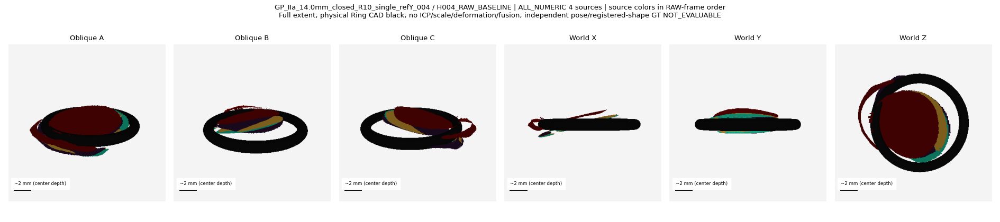
H004_RAW_BASELINE__GP_IIa_14.0mm_closed_R10_single_refY_004__FORMAL__RGB.png 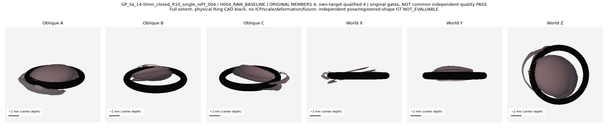
H004_RAW_BASELINE__GP_IIa_14.0mm_closed_R10_single_refY_004__FORMAL__SOURCE.png 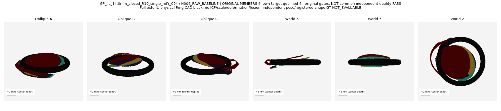
H004_RAW_BASELINE__GP_IIa_14.0mm_closed_R10_single_refY_004__EVERY_SOURCE_ATLAS.png 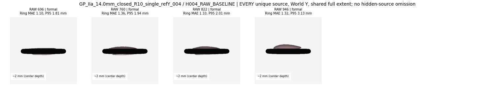
H004_RAW_BASELINE__GP_IIa_14.0mm_closed_R10_single_refY_004__REPRESENTATIVES.png 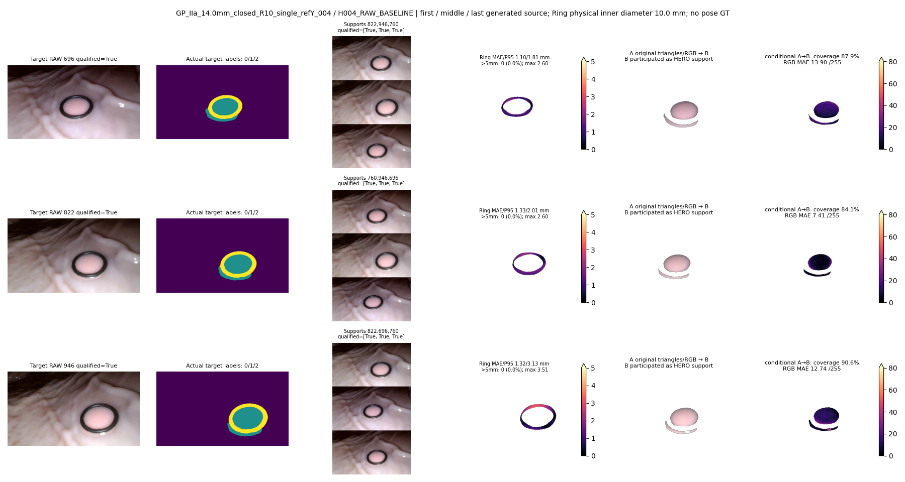
H004_RAW_BASELINE__GP_IIa_14.0mm_closed_R10_single_refY_004__CAMERAS.png 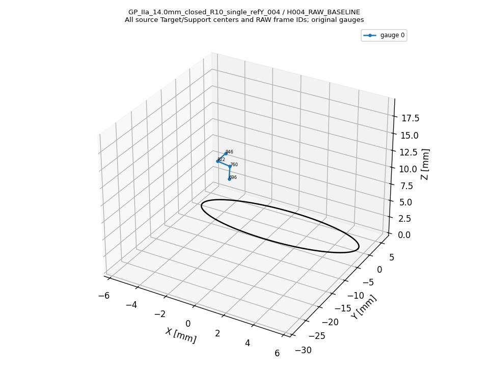
near_images / H004 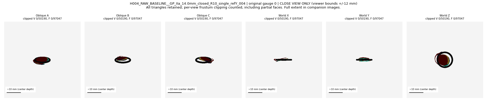
颜色顺序（turbo从起点到终点）：H004_GP_IIa_14.0mm_closed_R10_single_refY_004_view_010, H004_GP_IIa_14.0mm_closed_R10_single_refY_004_view_011, H004_GP_IIa_14.0mm_closed_R10_single_refY_004_view_012, H004_GP_IIa_14.0mm_closed_R10_single_refY_004_view_014
ALL与FORMAL配色分别按RAW帧、source_id排序后均匀采样turbo；两个子集不共享色号。下表含全部来源，自身指标不以canonical代填。input/原文件路径及哈希见CSV。
source_id / canonical 真实Target → 3Support 原成员 / 自身准入 / 动作 Ring MAE / P95 / max mm；>5mm% CAD共同覆盖 / 数值深度率 条件A→B覆盖 / RGB MAE H004_GP_IIa_14.0mm_closed_R10_single_refY_004_view_010696 → [822, 946, 760] True / T=True, S=[True, True, True] / REUSE 1.103 / 1.811 / 2.601; 0.00% 0.803 / 1.000 0.879 / 13.902 H004_GP_IIa_14.0mm_closed_R10_single_refY_004_view_011760 → [822, 696, 946] True / T=True, S=[True, True, True] / NEW 1.357 / 1.939 / 2.720; 0.00% 0.749 / 1.000 0.885 / 7.424 H004_GP_IIa_14.0mm_closed_R10_single_refY_004_view_012822 → [760, 946, 696] True / T=True, S=[True, True, True] / NEW 1.331 / 2.009 / 2.600; 0.00% 0.797 / 1.000 0.841 / 7.412 H004_GP_IIa_14.0mm_closed_R10_single_refY_004_view_014946 → [822, 696, 760] True / T=True, S=[True, True, True] / NEW 1.321 / 3.126 / 3.506; 0.00% 0.807 / 1.000 0.906 / 12.737
V6 / GP_IIa_14.0mm_closed_R10_single_refY_004 {"case": "GP_IIa_14.0mm_closed_R10_single_refY_004", "route": "V6", "legal_targets": 17, "original_legal_support_tuples": "51", "unique_generated_combinations": 21, "origin_records": 22, "existing_or_reused": 21, "new_inference": 0, "new_inference_failed": 0, "renderable_unique": 21, "formal_members": 17, "target_own_qualified": 6, "failed_or_empty_status": ""}
V6__GP_IIa_14.0mm_closed_R10_single_refY_004__ALL_NUMERIC__RGB.png 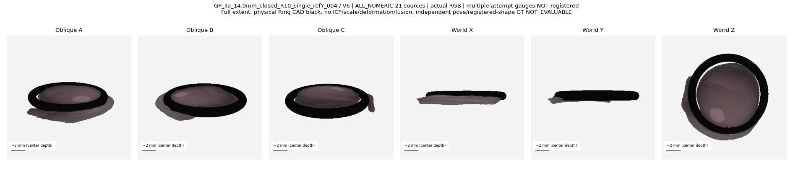
V6__GP_IIa_14.0mm_closed_R10_single_refY_004__ALL_NUMERIC__SOURCE.png 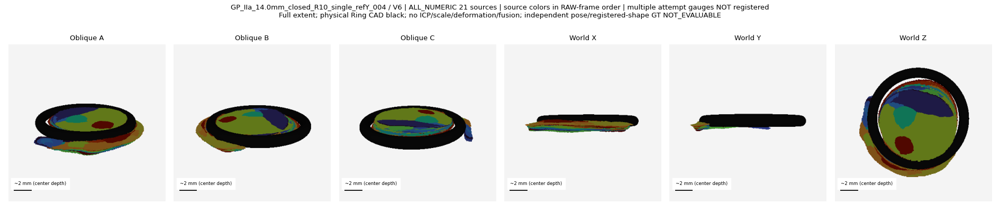
V6__GP_IIa_14.0mm_closed_R10_single_refY_004__FORMAL__RGB.png 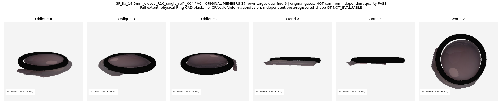
V6__GP_IIa_14.0mm_closed_R10_single_refY_004__FORMAL__SOURCE.png 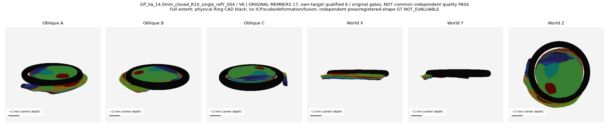
V6__GP_IIa_14.0mm_closed_R10_single_refY_004__EVERY_SOURCE_ATLAS.png 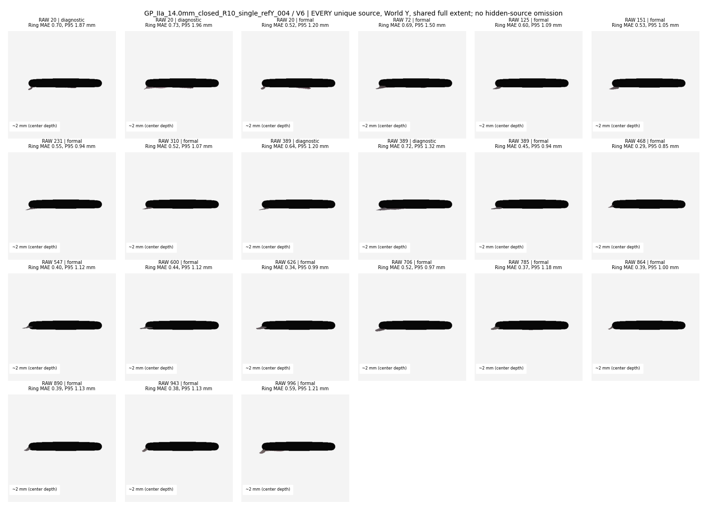
V6__GP_IIa_14.0mm_closed_R10_single_refY_004__REPRESENTATIVES.png 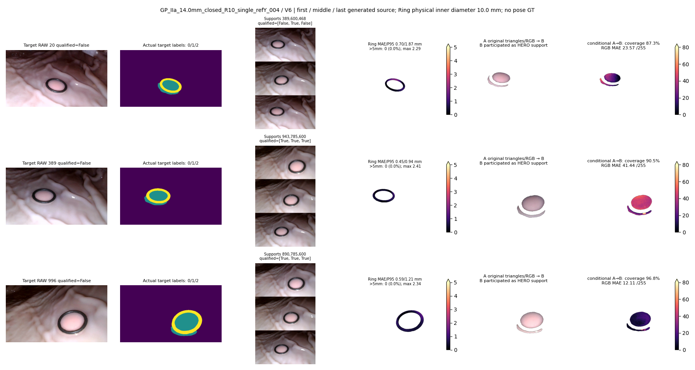
V6__GP_IIa_14.0mm_closed_R10_single_refY_004__CAMERAS.png 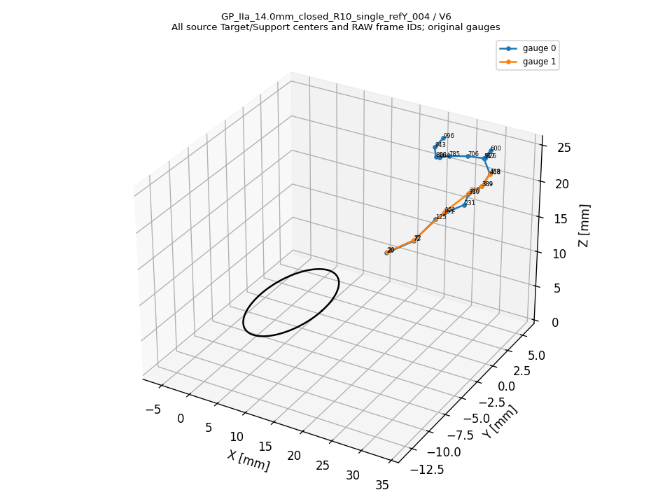
V6__GP_IIa_14.0mm_closed_R10_single_refY_004__ALIAS_ORIGINALS.png gauge_images / /home/liu/ring_first_3d_workspace/runs/m2f10_v6_multiview/M2F10-FORMAL-20261125-02/attempt1/v6/GP_IIa_14.0mm_closed_R10_single_refY_004 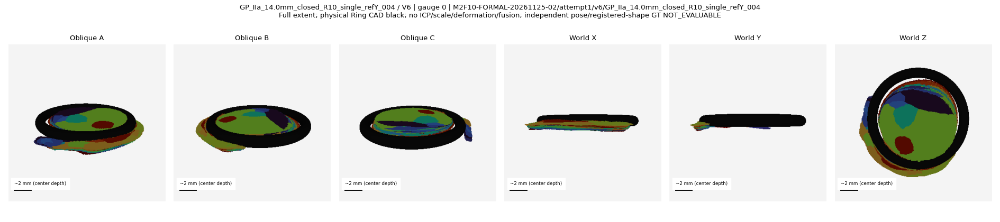
颜色顺序（turbo从起点到终点）：V6_GP_IIa_14.0mm_closed_R10_single_refY_004_005_ref00020_4aeda08f, V6_GP_IIa_14.0mm_closed_R10_single_refY_004_005_supported_ref00020_4aeda08f, V6_GP_IIa_14.0mm_closed_R10_single_refY_004_005_supported_ref00072_4aeda08f, V6_GP_IIa_14.0mm_closed_R10_single_refY_004_005_supported_ref00125_4aeda08f, V6_GP_IIa_14.0mm_closed_R10_single_refY_004_005_supported_ref00151_4aeda08f, V6_GP_IIa_14.0mm_closed_R10_single_refY_004_005_supported_ref00231_4aeda08f, V6_GP_IIa_14.0mm_closed_R10_single_refY_004_005_supported_ref00310_4aeda08f, V6_GP_IIa_14.0mm_closed_R10_single_refY_004_005_ref00389_4aeda08f, V6_GP_IIa_14.0mm_closed_R10_single_refY_004_005_supported_ref00389_4aeda08f, V6_GP_IIa_14.0mm_closed_R10_single_refY_004_005_supported_ref00468_4aeda08f, V6_GP_IIa_14.0mm_closed_R10_single_refY_004_005_supported_ref00547_4aeda08f, V6_GP_IIa_14.0mm_closed_R10_single_refY_004_005_supported_ref00600_4aeda08f, V6_GP_IIa_14.0mm_closed_R10_single_refY_004_005_supported_ref00626_4aeda08f, V6_GP_IIa_14.0mm_closed_R10_single_refY_004_005_supported_ref00706_4aeda08f, V6_GP_IIa_14.0mm_closed_R10_single_refY_004_005_supported_ref00785_4aeda08f, V6_GP_IIa_14.0mm_closed_R10_single_refY_004_005_supported_ref00864_4aeda08f, V6_GP_IIa_14.0mm_closed_R10_single_refY_004_005_supported_ref00890_4aeda08f, V6_GP_IIa_14.0mm_closed_R10_single_refY_004_005_supported_ref00943_4aeda08f, V6_GP_IIa_14.0mm_closed_R10_single_refY_004_005_supported_ref00996_4aeda08f
gauge_images / /home/liu/ring_first_3d_workspace/runs/m2f10_v6_multiview/M2F10-FORMAL-20261125-02/attempt0/v6/GP_IIa_14.0mm_closed_R10_single_refY_004 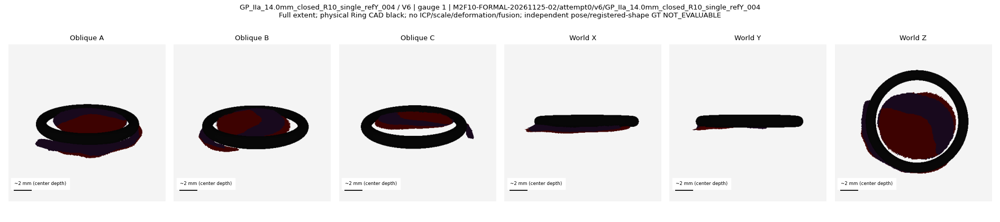
颜色顺序（turbo从起点到终点）：V6_GP_IIa_14.0mm_closed_R10_single_refY_004_005_ref00020_83613623, V6_GP_IIa_14.0mm_closed_R10_single_refY_004_005_ref00389_83613623
near_images / /home/liu/ring_first_3d_workspace/runs/m2f10_v6_multiview/M2F10-FORMAL-20261125-02/attempt1/v6/GP_IIa_14.0mm_closed_R10_single_refY_004 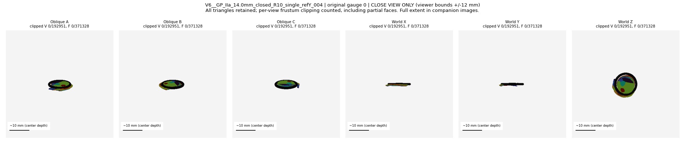
颜色顺序（turbo从起点到终点）：V6_GP_IIa_14.0mm_closed_R10_single_refY_004_005_ref00020_4aeda08f, V6_GP_IIa_14.0mm_closed_R10_single_refY_004_005_supported_ref00020_4aeda08f, V6_GP_IIa_14.0mm_closed_R10_single_refY_004_005_supported_ref00072_4aeda08f, V6_GP_IIa_14.0mm_closed_R10_single_refY_004_005_supported_ref00125_4aeda08f, V6_GP_IIa_14.0mm_closed_R10_single_refY_004_005_supported_ref00151_4aeda08f, V6_GP_IIa_14.0mm_closed_R10_single_refY_004_005_supported_ref00231_4aeda08f, V6_GP_IIa_14.0mm_closed_R10_single_refY_004_005_supported_ref00310_4aeda08f, V6_GP_IIa_14.0mm_closed_R10_single_refY_004_005_ref00389_4aeda08f, V6_GP_IIa_14.0mm_closed_R10_single_refY_004_005_supported_ref00389_4aeda08f, V6_GP_IIa_14.0mm_closed_R10_single_refY_004_005_supported_ref00468_4aeda08f, V6_GP_IIa_14.0mm_closed_R10_single_refY_004_005_supported_ref00547_4aeda08f, V6_GP_IIa_14.0mm_closed_R10_single_refY_004_005_supported_ref00600_4aeda08f, V6_GP_IIa_14.0mm_closed_R10_single_refY_004_005_supported_ref00626_4aeda08f, V6_GP_IIa_14.0mm_closed_R10_single_refY_004_005_supported_ref00706_4aeda08f, V6_GP_IIa_14.0mm_closed_R10_single_refY_004_005_supported_ref00785_4aeda08f, V6_GP_IIa_14.0mm_closed_R10_single_refY_004_005_supported_ref00864_4aeda08f, V6_GP_IIa_14.0mm_closed_R10_single_refY_004_005_supported_ref00890_4aeda08f, V6_GP_IIa_14.0mm_closed_R10_single_refY_004_005_supported_ref00943_4aeda08f, V6_GP_IIa_14.0mm_closed_R10_single_refY_004_005_supported_ref00996_4aeda08f
near_images / /home/liu/ring_first_3d_workspace/runs/m2f10_v6_multiview/M2F10-FORMAL-20261125-02/attempt0/v6/GP_IIa_14.0mm_closed_R10_single_refY_004 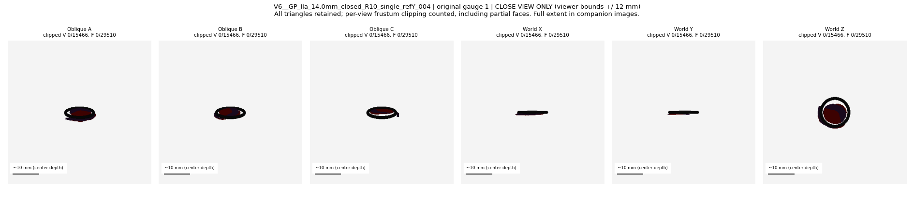
颜色顺序（turbo从起点到终点）：V6_GP_IIa_14.0mm_closed_R10_single_refY_004_005_ref00020_83613623, V6_GP_IIa_14.0mm_closed_R10_single_refY_004_005_ref00389_83613623
ALL与FORMAL配色分别按RAW帧、source_id排序后均匀采样turbo；两个子集不共享色号。下表含全部来源，自身指标不以canonical代填。input/原文件路径及哈希见CSV。
source_id / canonical 真实Target → 3Support 原成员 / 自身准入 / 动作 Ring MAE / P95 / max mm；>5mm% CAD共同覆盖 / 数值深度率 条件A→B覆盖 / RGB MAE V6_GP_IIa_14.0mm_closed_R10_single_refY_004_005_ref00020_4aeda08f20 → [389, 600, 468] False / T=False, S=[False, True, False] / EXISTING 0.698 / 1.866 / 2.292; 0.00% 0.915 / 1.000 0.873 / 23.575 V6_GP_IIa_14.0mm_closed_R10_single_refY_004_005_ref00020_8361362320 → [389, 468, 310] False / T=False, S=[False, False, False] / EXISTING 0.731 / 1.963 / 2.351; 0.00% 0.933 / 1.000 0.887 / 23.321 V6_GP_IIa_14.0mm_closed_R10_single_refY_004_005_supported_ref00020_4aeda08f20 → [600, 547, 785] True / T=False, S=[True, True, True] / EXISTING 0.523 / 1.196 / 2.727; 0.00% 0.915 / 1.000 0.864 / 17.221 V6_M2F12_GP_IIa_14.0mm_closed_R10_single_refY_00420 → [600, 547, 785] False / T=False, S=[True, True, True] / EXISTING 0.523 / 1.196 / 2.727; 0.00% 0.915 / 1.000 0.864 / 17.238 V6_GP_IIa_14.0mm_closed_R10_single_refY_004_005_supported_ref00072_4aeda08f72 → [600, 547, 706] True / T=False, S=[True, True, True] / EXISTING 0.687 / 1.502 / 3.142; 0.00% 0.925 / 1.000 0.925 / 10.380 V6_GP_IIa_14.0mm_closed_R10_single_refY_004_005_supported_ref00125_4aeda08f125 → [600, 547, 943] True / T=False, S=[True, True, True] / EXISTING 0.597 / 1.088 / 3.098; 0.00% 0.931 / 1.000 0.910 / 8.980 V6_GP_IIa_14.0mm_closed_R10_single_refY_004_005_supported_ref00151_4aeda08f151 → [600, 547, 943] True / T=False, S=[True, True, True] / EXISTING 0.531 / 1.045 / 2.260; 0.00% 0.939 / 1.000 0.936 / 8.327 V6_GP_IIa_14.0mm_closed_R10_single_refY_004_005_supported_ref00231_4aeda08f231 → [600, 943, 706] True / T=False, S=[True, True, True] / EXISTING 0.553 / 0.943 / 2.150; 0.00% 0.925 / 1.000 0.919 / 9.032 V6_GP_IIa_14.0mm_closed_R10_single_refY_004_005_supported_ref00310_4aeda08f310 → [943, 600, 785] True / T=False, S=[True, True, True] / EXISTING 0.521 / 1.070 / 2.267; 0.00% 0.946 / 1.000 0.916 / 39.219 V6_GP_IIa_14.0mm_closed_R10_single_refY_004_005_ref00389_4aeda08f389 → [20, 72, 996] False / T=False, S=[False, False, False] / EXISTING 0.639 / 1.203 / 2.088; 0.00% 0.930 / 1.000 0.888 / 24.545 V6_GP_IIa_14.0mm_closed_R10_single_refY_004_005_ref00389_83613623389 → [20, 72, 151] False / T=False, S=[False, False, False] / EXISTING 0.717 / 1.319 / 2.257; 0.00% 0.930 / 1.000 0.895 / 24.299 V6_GP_IIa_14.0mm_closed_R10_single_refY_004_005_supported_ref00389_4aeda08f389 → [943, 785, 600] True / T=False, S=[True, True, True] / EXISTING 0.452 / 0.944 / 2.410; 0.00% 0.930 / 1.000 0.905 / 41.438 V6_GP_IIa_14.0mm_closed_R10_single_refY_004_005_supported_ref00468_4aeda08f468 → [943, 785, 890] True / T=False, S=[True, True, True] / EXISTING 0.285 / 0.850 / 1.519; 0.00% 0.920 / 1.000 0.908 / 43.914 V6_GP_IIa_14.0mm_closed_R10_single_refY_004_005_supported_ref00547_4aeda08f547 → [943, 890, 785] True / T=True, S=[True, True, True] / EXISTING 0.401 / 1.120 / 2.131; 0.00% 0.930 / 1.000 0.932 / 34.081 V6_GP_IIa_14.0mm_closed_R10_single_refY_004_005_supported_ref00600_4aeda08f600 → [943, 890, 785] True / T=True, S=[True, True, True] / EXISTING 0.439 / 1.125 / 2.335; 0.00% 0.929 / 1.000 0.928 / 33.711 V6_GP_IIa_14.0mm_closed_R10_single_refY_004_005_supported_ref00626_4aeda08f626 → [943, 890, 785] True / T=False, S=[True, True, True] / EXISTING 0.341 / 0.995 / 2.734; 0.00% 0.925 / 1.000 0.940 / 27.537 V6_GP_IIa_14.0mm_closed_R10_single_refY_004_005_supported_ref00706_4aeda08f706 → [943, 890, 785] True / T=True, S=[True, True, True] / EXISTING 0.521 / 0.965 / 2.896; 0.00% 0.954 / 1.000 0.952 / 22.337 V6_GP_IIa_14.0mm_closed_R10_single_refY_004_005_supported_ref00785_4aeda08f785 → [600, 943, 547] True / T=True, S=[True, True, True] / EXISTING 0.371 / 1.181 / 2.726; 0.00% 0.936 / 1.000 0.943 / 19.293 V6_GP_IIa_14.0mm_closed_R10_single_refY_004_005_supported_ref00864_4aeda08f864 → [600, 706, 547] True / T=False, S=[True, True, True] / EXISTING 0.390 / 1.004 / 2.642; 0.00% 0.949 / 1.000 0.925 / 29.934 V6_GP_IIa_14.0mm_closed_R10_single_refY_004_005_supported_ref00890_4aeda08f890 → [600, 706, 547] True / T=True, S=[True, True, True] / EXISTING 0.390 / 1.131 / 2.724; 0.00% 0.940 / 1.000 0.914 / 31.340 V6_GP_IIa_14.0mm_closed_R10_single_refY_004_005_supported_ref00943_4aeda08f943 → [600, 706, 547] True / T=True, S=[True, True, True] / EXISTING 0.380 / 1.126 / 2.725; 0.00% 0.944 / 1.000 0.940 / 33.856 V6_GP_IIa_14.0mm_closed_R10_single_refY_004_005_supported_ref00996_4aeda08f996 → [890, 785, 600] True / T=False, S=[True, True, True] / EXISTING 0.588 / 1.211 / 2.343; 0.00% 0.955 / 1.000 0.968 / 12.107
H004_RAW_BASELINE / GP_IIa_14.0mm_closed_R10_single_refY_005 {"case": "GP_IIa_14.0mm_closed_R10_single_refY_005", "route": "H004_RAW_BASELINE", "legal_targets": 0, "original_legal_support_tuples": "0", "unique_generated_combinations": 0, "origin_records": 0, "existing_or_reused": 0, "new_inference": 0, "new_inference_failed": 0, "renderable_unique": 0, "formal_members": 0, "target_own_qualified": 0, "failed_or_empty_status": "NO_LEGAL_TARGET"}
H004_RAW_BASELINE__GP_IIa_14.0mm_closed_R10_single_refY_005__ALL_NUMERIC__RGB.png H004_RAW_BASELINE__GP_IIa_14.0mm_closed_R10_single_refY_005__ALL_NUMERIC__SOURCE.png H004_RAW_BASELINE__GP_IIa_14.0mm_closed_R10_single_refY_005__FORMAL__RGB.png H004_RAW_BASELINE__GP_IIa_14.0mm_closed_R10_single_refY_005__FORMAL__SOURCE.png ALL与FORMAL配色分别按RAW帧、source_id排序后均匀采样turbo；两个子集不共享色号。下表含全部来源，自身指标不以canonical代填。input/原文件路径及哈希见CSV。
source_id / canonical 真实Target → 3Support 原成员 / 自身准入 / 动作 Ring MAE / P95 / max mm；>5mm% CAD共同覆盖 / 数值深度率 条件A→B覆盖 / RGB MAE
V6 / GP_IIa_14.0mm_closed_R10_single_refY_005 {"case": "GP_IIa_14.0mm_closed_R10_single_refY_005", "route": "V6", "legal_targets": 0, "original_legal_support_tuples": "0", "unique_generated_combinations": 4, "origin_records": 4, "existing_or_reused": 4, "new_inference": 0, "new_inference_failed": 0, "renderable_unique": 4, "formal_members": 0, "target_own_qualified": 1, "failed_or_empty_status": ""}
V6__GP_IIa_14.0mm_closed_R10_single_refY_005__ALL_NUMERIC__RGB.png 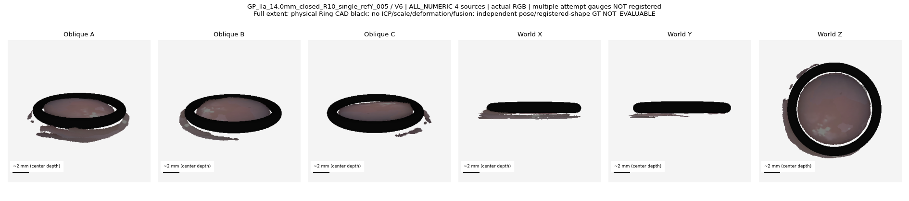
V6__GP_IIa_14.0mm_closed_R10_single_refY_005__ALL_NUMERIC__SOURCE.png V6__GP_IIa_14.0mm_closed_R10_single_refY_005__FORMAL__RGB.png V6__GP_IIa_14.0mm_closed_R10_single_refY_005__FORMAL__SOURCE.png V6__GP_IIa_14.0mm_closed_R10_single_refY_005__EVERY_SOURCE_ATLAS.png V6__GP_IIa_14.0mm_closed_R10_single_refY_005__REPRESENTATIVES.png 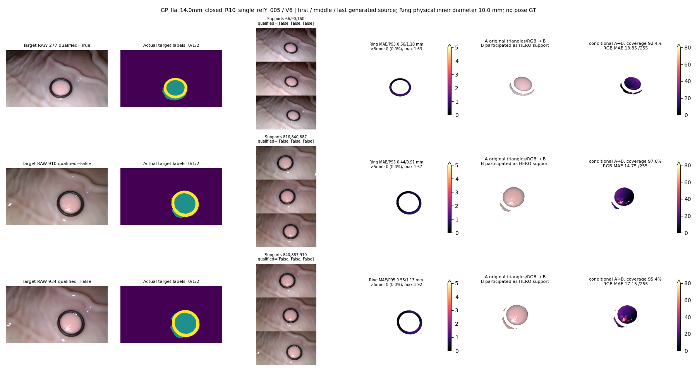
V6__GP_IIa_14.0mm_closed_R10_single_refY_005__CAMERAS.png 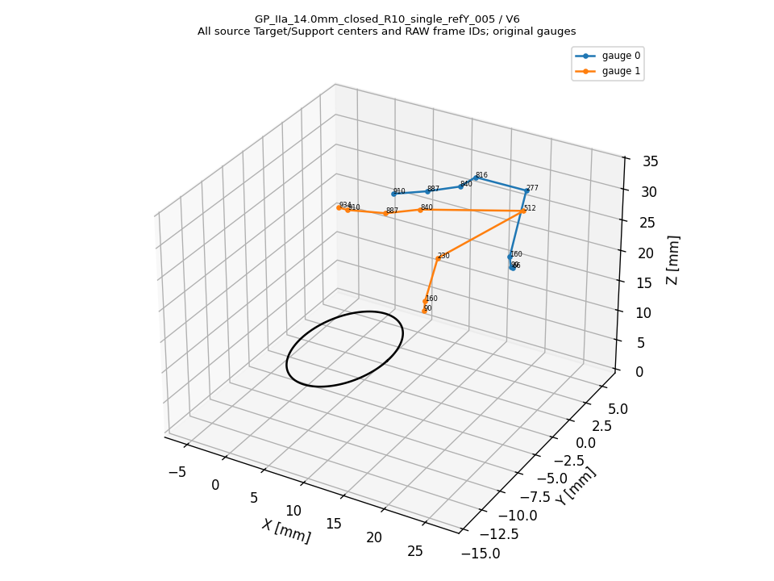
gauge_images / /home/liu/ring_first_3d_workspace/runs/m2f10_v6_multiview/M2F10-FORMAL-20261125-02/attempt1/v6/GP_IIa_14.0mm_closed_R10_single_refY_005 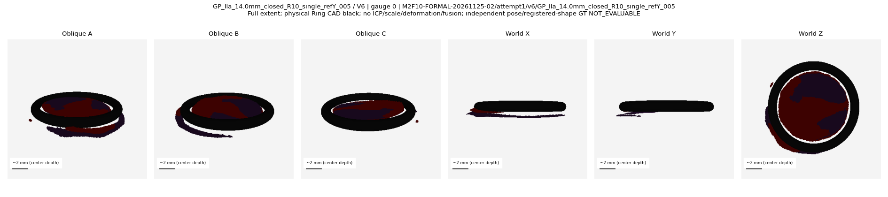
颜色顺序（turbo从起点到终点）：V6_GP_IIa_14.0mm_closed_R10_single_refY_005_005_ref00277_5b11699c, V6_GP_IIa_14.0mm_closed_R10_single_refY_005_005_ref00910_5b11699c
gauge_images / /home/liu/ring_first_3d_workspace/runs/m2f10_v6_multiview/M2F10-FORMAL-20261125-02/attempt0/v6/GP_IIa_14.0mm_closed_R10_single_refY_005 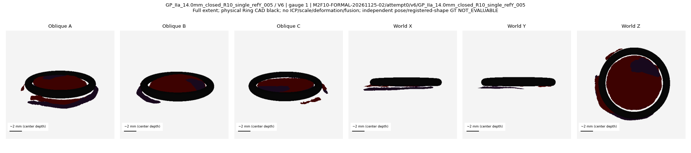
颜色顺序（turbo从起点到终点）：V6_GP_IIa_14.0mm_closed_R10_single_refY_005_005_ref00512_f5b0352f, V6_GP_IIa_14.0mm_closed_R10_single_refY_005_005_ref00934_f5b0352f
near_images / /home/liu/ring_first_3d_workspace/runs/m2f10_v6_multiview/M2F10-FORMAL-20261125-02/attempt1/v6/GP_IIa_14.0mm_closed_R10_single_refY_005 颜色顺序（turbo从起点到终点）：V6_GP_IIa_14.0mm_closed_R10_single_refY_005_005_ref00277_5b11699c, V6_GP_IIa_14.0mm_closed_R10_single_refY_005_005_ref00910_5b11699c
near_images / /home/liu/ring_first_3d_workspace/runs/m2f10_v6_multiview/M2F10-FORMAL-20261125-02/attempt0/v6/GP_IIa_14.0mm_closed_R10_single_refY_005 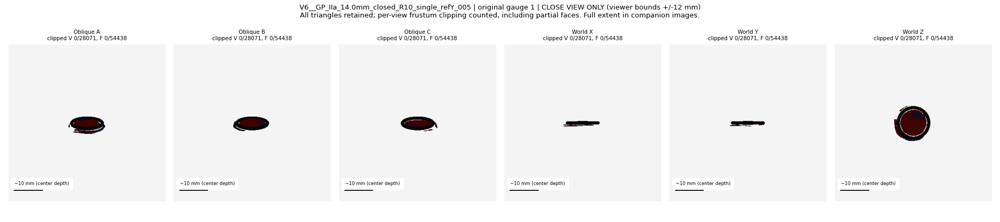
颜色顺序（turbo从起点到终点）：V6_GP_IIa_14.0mm_closed_R10_single_refY_005_005_ref00512_f5b0352f, V6_GP_IIa_14.0mm_closed_R10_single_refY_005_005_ref00934_f5b0352f
ALL与FORMAL配色分别按RAW帧、source_id排序后均匀采样turbo；两个子集不共享色号。下表含全部来源，自身指标不以canonical代填。input/原文件路径及哈希见CSV。
source_id / canonical 真实Target → 3Support 原成员 / 自身准入 / 动作 Ring MAE / P95 / max mm；>5mm% CAD共同覆盖 / 数值深度率 条件A→B覆盖 / RGB MAE V6_GP_IIa_14.0mm_closed_R10_single_refY_005_005_ref00277_5b11699c277 → [66, 90, 160] False / T=True, S=[False, False, False] / EXISTING 0.662 / 1.101 / 1.632; 0.00% 0.906 / 1.000 0.924 / 13.851 V6_GP_IIa_14.0mm_closed_R10_single_refY_005_005_ref00512_f5b0352f512 → [160, 90, 230] False / T=False, S=[False, False, False] / EXISTING 0.622 / 0.979 / 2.207; 0.00% 0.911 / 1.000 0.928 / 11.011 V6_GP_IIa_14.0mm_closed_R10_single_refY_005_005_ref00910_5b11699c910 → [816, 840, 887] False / T=False, S=[False, False, False] / EXISTING 0.443 / 0.914 / 1.667; 0.00% 0.895 / 1.000 0.970 / 14.747 V6_GP_IIa_14.0mm_closed_R10_single_refY_005_005_ref00934_f5b0352f934 → [840, 887, 910] False / T=False, S=[False, False, False] / EXISTING 0.552 / 1.130 / 1.922; 0.00% 0.893 / 1.000 0.954 / 17.147
H004_RAW_BASELINE / GP_Ip_12.0mm_closed_R10_single_refY_004 {"case": "GP_Ip_12.0mm_closed_R10_single_refY_004", "route": "H004_RAW_BASELINE", "legal_targets": 15, "original_legal_support_tuples": "15", "unique_generated_combinations": 15, "origin_records": 15, "existing_or_reused": 1, "new_inference": 14, "new_inference_failed": 0, "renderable_unique": 15, "formal_members": 15, "target_own_qualified": 15, "failed_or_empty_status": ""}
H004_RAW_BASELINE__GP_Ip_12.0mm_closed_R10_single_refY_004__ALL_NUMERIC__RGB.png 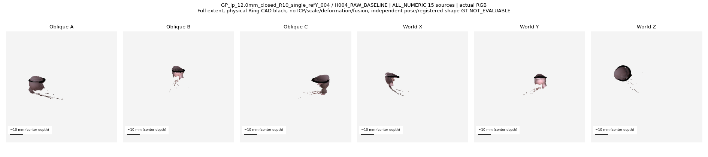
H004_RAW_BASELINE__GP_Ip_12.0mm_closed_R10_single_refY_004__ALL_NUMERIC__SOURCE.png 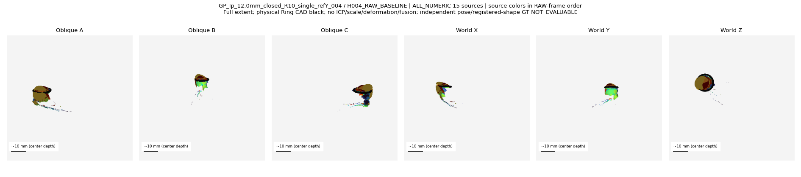
H004_RAW_BASELINE__GP_Ip_12.0mm_closed_R10_single_refY_004__FORMAL__RGB.png 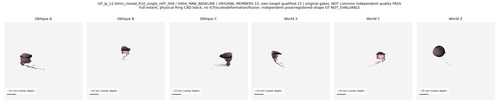
H004_RAW_BASELINE__GP_Ip_12.0mm_closed_R10_single_refY_004__FORMAL__SOURCE.png 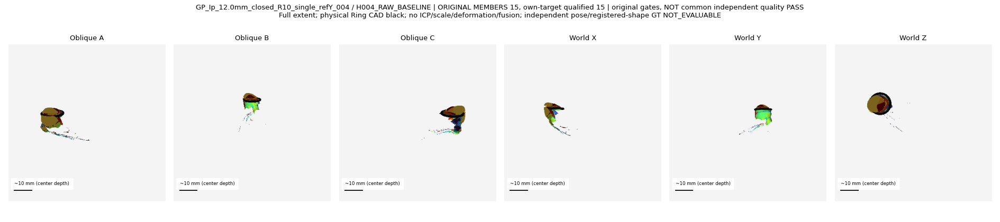
H004_RAW_BASELINE__GP_Ip_12.0mm_closed_R10_single_refY_004__EVERY_SOURCE_ATLAS.png 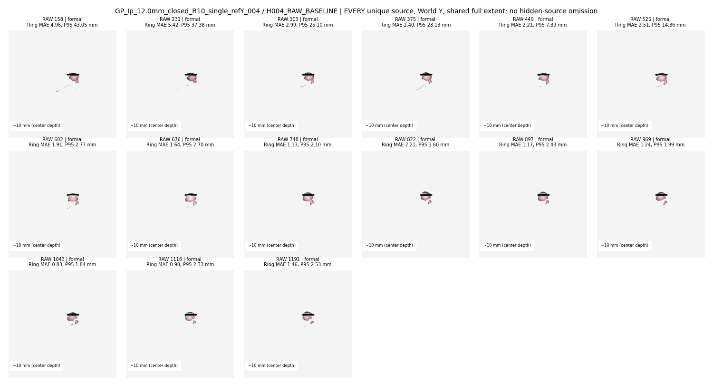
H004_RAW_BASELINE__GP_Ip_12.0mm_closed_R10_single_refY_004__REPRESENTATIVES.png 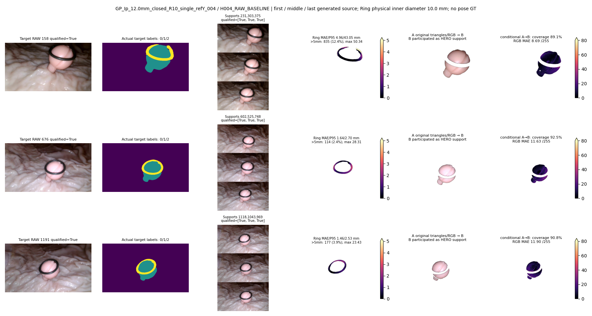
H004_RAW_BASELINE__GP_Ip_12.0mm_closed_R10_single_refY_004__CAMERAS.png 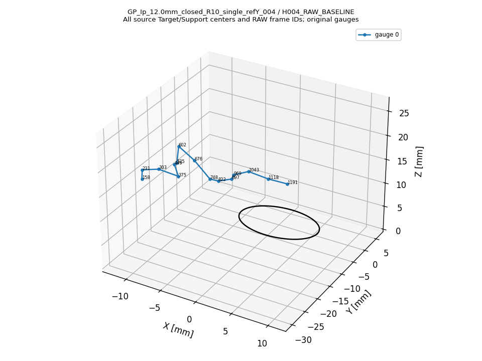
near_images / H004 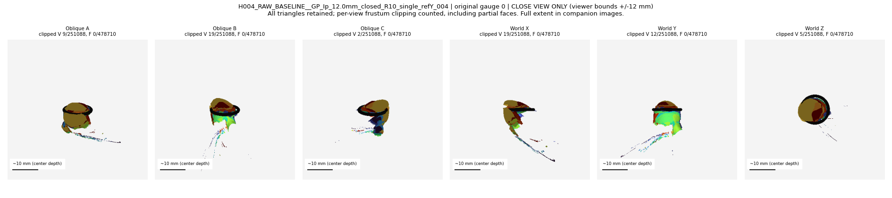
颜色顺序（turbo从起点到终点）：H004_GP_Ip_12.0mm_closed_R10_single_refY_004_view_001, H004_GP_Ip_12.0mm_closed_R10_single_refY_004_view_002, H004_GP_Ip_12.0mm_closed_R10_single_refY_004_view_003, H004_GP_Ip_12.0mm_closed_R10_single_refY_004_view_004, H004_GP_Ip_12.0mm_closed_R10_single_refY_004_view_005, H004_GP_Ip_12.0mm_closed_R10_single_refY_004_view_006, H004_GP_Ip_12.0mm_closed_R10_single_refY_004_view_007, H004_GP_Ip_12.0mm_closed_R10_single_refY_004_view_008, H004_GP_Ip_12.0mm_closed_R10_single_refY_004_view_009, H004_GP_Ip_12.0mm_closed_R10_single_refY_004_view_010, H004_GP_Ip_12.0mm_closed_R10_single_refY_004_view_011, H004_GP_Ip_12.0mm_closed_R10_single_refY_004_view_012, H004_GP_Ip_12.0mm_closed_R10_single_refY_004_view_013, H004_GP_Ip_12.0mm_closed_R10_single_refY_004_view_014, H004_GP_Ip_12.0mm_closed_R10_single_refY_004_view_015
ALL与FORMAL配色分别按RAW帧、source_id排序后均匀采样turbo；两个子集不共享色号。下表含全部来源，自身指标不以canonical代填。input/原文件路径及哈希见CSV。
source_id / canonical 真实Target → 3Support 原成员 / 自身准入 / 动作 Ring MAE / P95 / max mm；>5mm% CAD共同覆盖 / 数值深度率 条件A→B覆盖 / RGB MAE H004_GP_Ip_12.0mm_closed_R10_single_refY_004_view_001158 → [231, 303, 375] True / T=True, S=[True, True, True] / REUSE 4.961 / 43.046 / 50.337; 12.43% 0.879 / 1.000 0.891 / 8.695 H004_GP_Ip_12.0mm_closed_R10_single_refY_004_view_002231 → [303, 158, 375] True / T=True, S=[True, True, True] / NEW 5.424 / 37.384 / 44.651; 15.28% 0.907 / 1.000 0.931 / 25.857 H004_GP_Ip_12.0mm_closed_R10_single_refY_004_view_003303 → [375, 231, 525] True / T=True, S=[True, True, True] / NEW 2.994 / 25.096 / 39.468; 9.63% 0.905 / 1.000 0.920 / 10.501 H004_GP_Ip_12.0mm_closed_R10_single_refY_004_view_004375 → [449, 525, 303] True / T=True, S=[True, True, True] / NEW 2.400 / 23.132 / 37.027; 7.71% 0.930 / 1.000 0.917 / 7.874 H004_GP_Ip_12.0mm_closed_R10_single_refY_004_view_005449 → [525, 375, 602] True / T=True, S=[True, True, True] / NEW 2.215 / 7.388 / 30.229; 5.42% 0.932 / 1.000 0.913 / 9.079 H004_GP_Ip_12.0mm_closed_R10_single_refY_004_view_006525 → [449, 676, 602] True / T=True, S=[True, True, True] / NEW 2.508 / 14.364 / 30.183; 6.70% 0.938 / 1.000 0.920 / 8.742 H004_GP_Ip_12.0mm_closed_R10_single_refY_004_view_007602 → [676, 525, 449] True / T=True, S=[True, True, True] / NEW 1.910 / 2.766 / 27.631; 3.47% 0.922 / 1.000 0.901 / 11.611 H004_GP_Ip_12.0mm_closed_R10_single_refY_004_view_008676 → [602, 525, 748] True / T=True, S=[True, True, True] / NEW 1.638 / 2.697 / 28.306; 2.40% 0.887 / 1.000 0.925 / 11.628 H004_GP_Ip_12.0mm_closed_R10_single_refY_004_view_009748 → [822, 897, 676] True / T=True, S=[True, True, True] / NEW 1.133 / 2.102 / 30.264; 3.18% 0.866 / 1.000 0.904 / 6.025 H004_GP_Ip_12.0mm_closed_R10_single_refY_004_view_010822 → [748, 897, 969] True / T=True, S=[True, True, True] / NEW 2.213 / 3.602 / 28.812; 4.66% 0.926 / 1.000 0.930 / 5.835 H004_GP_Ip_12.0mm_closed_R10_single_refY_004_view_011897 → [969, 822, 748] True / T=True, S=[True, True, True] / NEW 1.165 / 2.435 / 26.319; 2.72% 0.895 / 1.000 0.933 / 5.531 H004_GP_Ip_12.0mm_closed_R10_single_refY_004_view_012969 → [1043, 897, 822] True / T=True, S=[True, True, True] / NEW 1.236 / 1.994 / 26.782; 2.83% 0.908 / 1.000 0.925 / 7.598 H004_GP_Ip_12.0mm_closed_R10_single_refY_004_view_0131043 → [969, 1118, 897] True / T=True, S=[True, True, True] / NEW 0.825 / 1.842 / 23.774; 1.89% 0.884 / 1.000 0.917 / 7.770 H004_GP_Ip_12.0mm_closed_R10_single_refY_004_view_0141118 → [1043, 1191, 969] True / T=True, S=[True, True, True] / NEW 0.980 / 2.334 / 24.283; 2.84% 0.924 / 1.000 0.909 / 14.492 H004_GP_Ip_12.0mm_closed_R10_single_refY_004_view_0151191 → [1118, 1043, 969] True / T=True, S=[True, True, True] / NEW 1.460 / 2.531 / 23.428; 3.86% 0.922 / 1.000 0.908 / 11.898
V6 / GP_Ip_12.0mm_closed_R10_single_refY_004 {"case": "GP_Ip_12.0mm_closed_R10_single_refY_004", "route": "V6", "legal_targets": 0, "original_legal_support_tuples": "0", "unique_generated_combinations": 4, "origin_records": 6, "existing_or_reused": 4, "new_inference": 0, "new_inference_failed": 0, "renderable_unique": 4, "formal_members": 0, "target_own_qualified": 0, "failed_or_empty_status": ""}
V6__GP_Ip_12.0mm_closed_R10_single_refY_004__ALL_NUMERIC__RGB.png 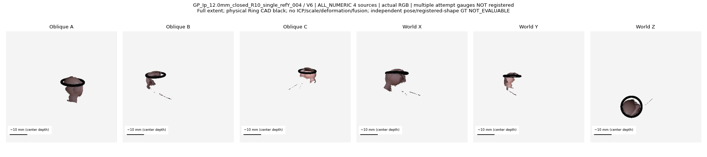
V6__GP_Ip_12.0mm_closed_R10_single_refY_004__ALL_NUMERIC__SOURCE.png 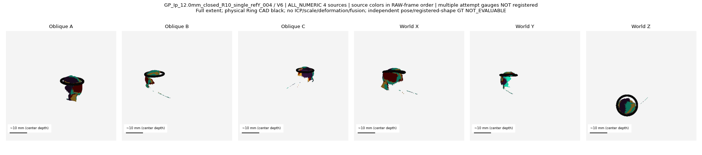
V6__GP_Ip_12.0mm_closed_R10_single_refY_004__FORMAL__RGB.png V6__GP_Ip_12.0mm_closed_R10_single_refY_004__FORMAL__SOURCE.png V6__GP_Ip_12.0mm_closed_R10_single_refY_004__EVERY_SOURCE_ATLAS.png V6__GP_Ip_12.0mm_closed_R10_single_refY_004__REPRESENTATIVES.png 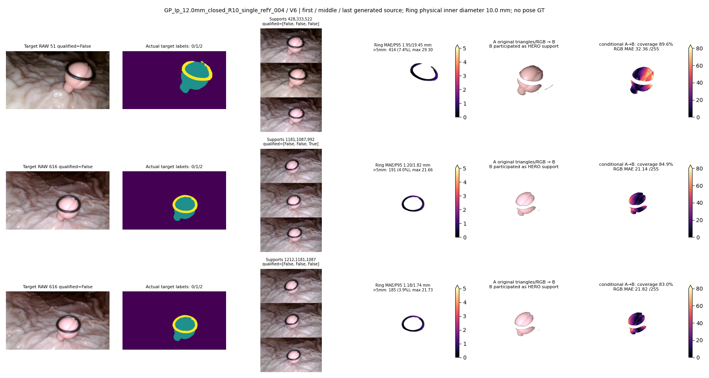
V6__GP_Ip_12.0mm_closed_R10_single_refY_004__CAMERAS.png 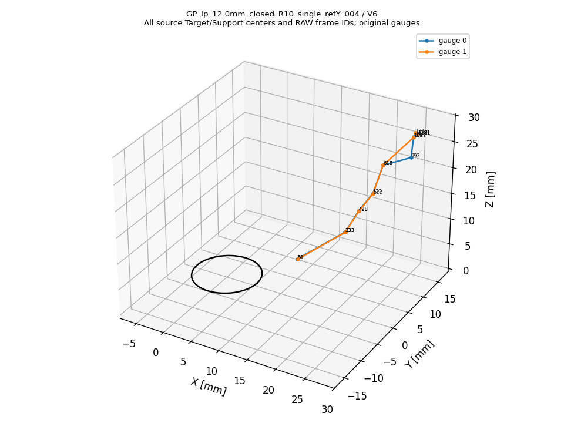
V6__GP_Ip_12.0mm_closed_R10_single_refY_004__ALIAS_ORIGINALS.png gauge_images / /home/liu/ring_first_3d_workspace/runs/m2f10_v6_multiview/M2F10-FORMAL-20261125-01/attempt0/v6/GP_Ip_12.0mm_closed_R10_single_refY_004 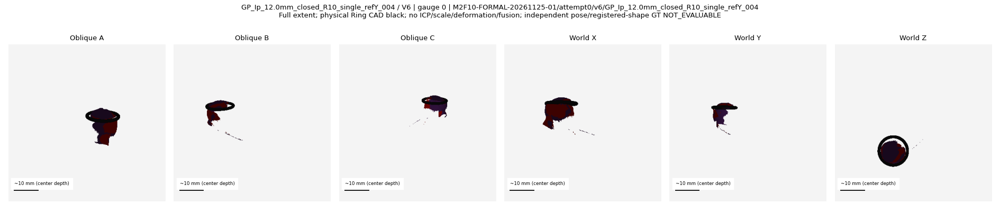
颜色顺序（turbo从起点到终点）：V6_GP_Ip_12.0mm_closed_R10_single_refY_004_005_ref00051_7dc31ad0, V6_GP_Ip_12.0mm_closed_R10_single_refY_004_005_ref00616_7dc31ad0
gauge_images / /home/liu/ring_first_3d_workspace/runs/m2f10_v6_multiview/M2F10-FORMAL-20261125-02/attempt1/v6/GP_Ip_12.0mm_closed_R10_single_refY_004 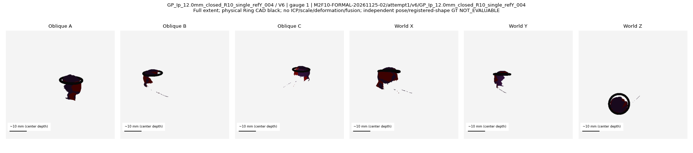
颜色顺序（turbo从起点到终点）：V6_GP_Ip_12.0mm_closed_R10_single_refY_004_005_ref00051_98e055f9, V6_GP_Ip_12.0mm_closed_R10_single_refY_004_005_ref00616_98e055f9
near_images / /home/liu/ring_first_3d_workspace/runs/m2f10_v6_multiview/M2F10-FORMAL-20261125-01/attempt0/v6/GP_Ip_12.0mm_closed_R10_single_refY_004 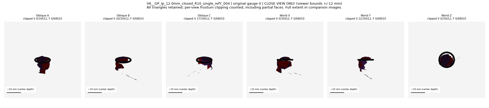
颜色顺序（turbo从起点到终点）：V6_GP_Ip_12.0mm_closed_R10_single_refY_004_005_ref00051_7dc31ad0, V6_GP_Ip_12.0mm_closed_R10_single_refY_004_005_ref00616_7dc31ad0
near_images / /home/liu/ring_first_3d_workspace/runs/m2f10_v6_multiview/M2F10-FORMAL-20261125-02/attempt1/v6/GP_Ip_12.0mm_closed_R10_single_refY_004 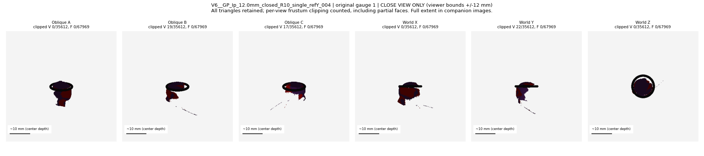
颜色顺序（turbo从起点到终点）：V6_GP_Ip_12.0mm_closed_R10_single_refY_004_005_ref00051_98e055f9, V6_GP_Ip_12.0mm_closed_R10_single_refY_004_005_ref00616_98e055f9
ALL与FORMAL配色分别按RAW帧、source_id排序后均匀采样turbo；两个子集不共享色号。下表含全部来源，自身指标不以canonical代填。input/原文件路径及哈希见CSV。
source_id / canonical 真实Target → 3Support 原成员 / 自身准入 / 动作 Ring MAE / P95 / max mm；>5mm% CAD共同覆盖 / 数值深度率 条件A→B覆盖 / RGB MAE V6_GP_Ip_12.0mm_closed_R10_single_refY_004_005_ref00051_7dc31ad051 → [428, 333, 522] False / T=False, S=[False, False, False] / EXISTING 1.946 / 19.449 / 29.298; 7.43% 0.860 / 1.000 0.896 / 32.356 V6_GP_Ip_12.0mm_closed_R10_single_refY_004_005_ref00051_98e055f951 → [428, 333, 522] False / T=False, S=[False, False, False] / EXISTING 1.817 / 17.826 / 28.872; 7.02% 0.864 / 1.000 0.896 / 32.253 V6_GP_Ip_12.0mm_closed_R10_single_refY_004_005_ref00051_dbd63b9051 → [428, 333, 522] False / T=False, S=[False, False, False] / EXISTING 1.946 / 19.449 / 29.298; 7.43% 0.860 / 1.000 0.896 / 32.356 V6_GP_Ip_12.0mm_closed_R10_single_refY_004_005_ref00616_7dc31ad0616 → [1181, 1087, 992] False / T=False, S=[False, False, True] / EXISTING 1.199 / 1.820 / 21.657; 4.02% 0.928 / 1.000 0.849 / 21.140 V6_GP_Ip_12.0mm_closed_R10_single_refY_004_005_ref00616_98e055f9616 → [1212, 1181, 1087] False / T=False, S=[False, False, False] / EXISTING 1.184 / 1.743 / 21.726; 3.89% 0.928 / 1.000 0.830 / 21.824 V6_GP_Ip_12.0mm_closed_R10_single_refY_004_005_ref00616_dbd63b90616 → [1181, 1087, 992] False / T=False, S=[False, False, True] / EXISTING 1.199 / 1.820 / 21.657; 4.02% 0.928 / 1.000 0.849 / 21.140
H004_RAW_BASELINE / GP_Ip_12.0mm_closed_R10_single_refY_005 {"case": "GP_Ip_12.0mm_closed_R10_single_refY_005", "route": "H004_RAW_BASELINE", "legal_targets": 11, "original_legal_support_tuples": "11", "unique_generated_combinations": 11, "origin_records": 11, "existing_or_reused": 1, "new_inference": 10, "new_inference_failed": 0, "renderable_unique": 11, "formal_members": 11, "target_own_qualified": 11, "failed_or_empty_status": ""}
H004_RAW_BASELINE__GP_Ip_12.0mm_closed_R10_single_refY_005__ALL_NUMERIC__RGB.png 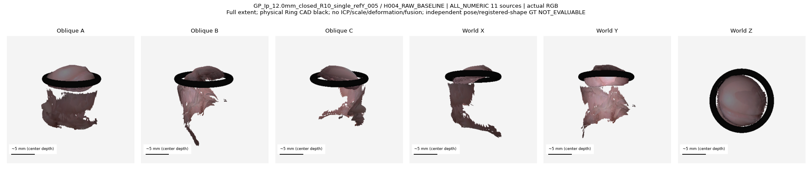
H004_RAW_BASELINE__GP_Ip_12.0mm_closed_R10_single_refY_005__ALL_NUMERIC__SOURCE.png 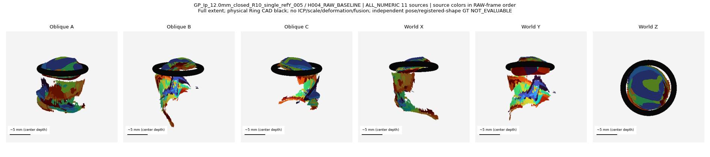
H004_RAW_BASELINE__GP_Ip_12.0mm_closed_R10_single_refY_005__FORMAL__RGB.png 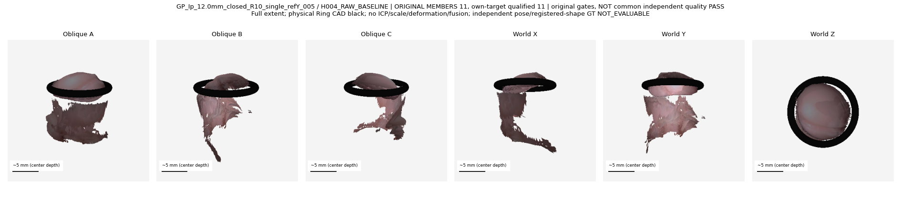
H004_RAW_BASELINE__GP_Ip_12.0mm_closed_R10_single_refY_005__FORMAL__SOURCE.png 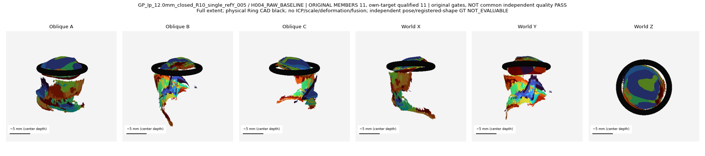
H004_RAW_BASELINE__GP_Ip_12.0mm_closed_R10_single_refY_005__EVERY_SOURCE_ATLAS.png 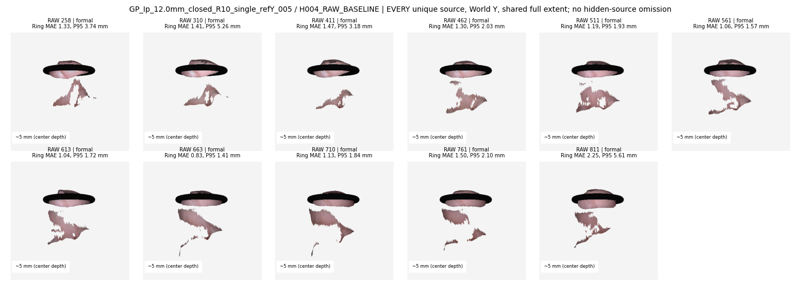
H004_RAW_BASELINE__GP_Ip_12.0mm_closed_R10_single_refY_005__REPRESENTATIVES.png 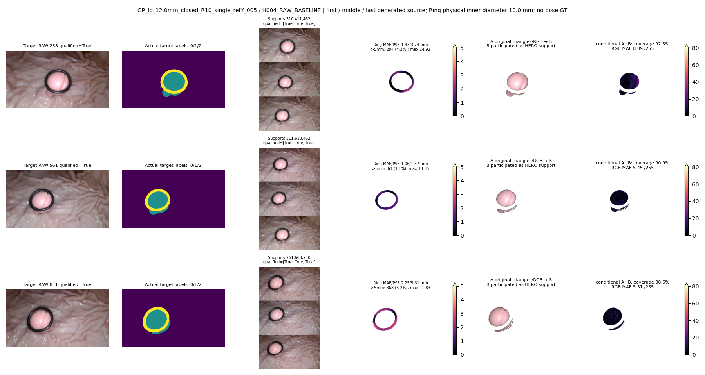
H004_RAW_BASELINE__GP_Ip_12.0mm_closed_R10_single_refY_005__CAMERAS.png 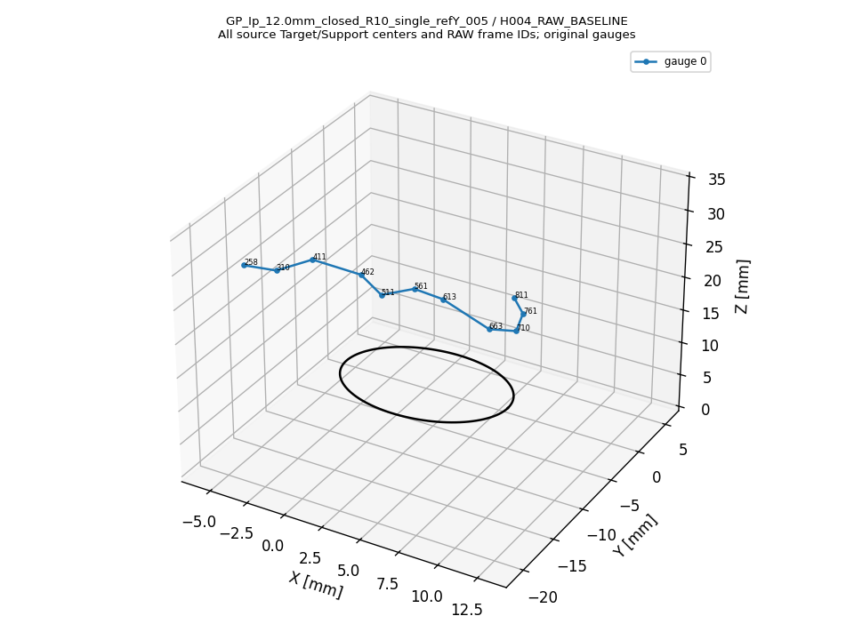
near_images / H004 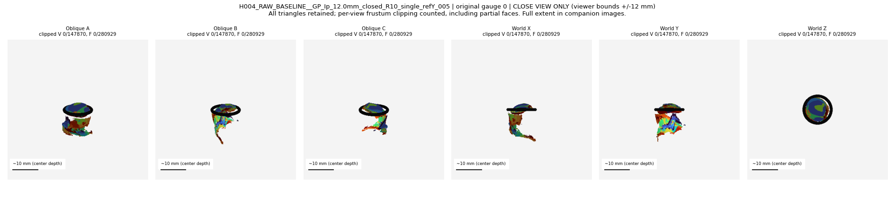
颜色顺序（turbo从起点到终点）：H004_GP_Ip_12.0mm_closed_R10_single_refY_005_view_004, H004_GP_Ip_12.0mm_closed_R10_single_refY_005_view_005, H004_GP_Ip_12.0mm_closed_R10_single_refY_005_view_007, H004_GP_Ip_12.0mm_closed_R10_single_refY_005_view_008, H004_GP_Ip_12.0mm_closed_R10_single_refY_005_view_009, H004_GP_Ip_12.0mm_closed_R10_single_refY_005_view_010, H004_GP_Ip_12.0mm_closed_R10_single_refY_005_view_011, H004_GP_Ip_12.0mm_closed_R10_single_refY_005_view_012, H004_GP_Ip_12.0mm_closed_R10_single_refY_005_view_013, H004_GP_Ip_12.0mm_closed_R10_single_refY_005_view_014, H004_GP_Ip_12.0mm_closed_R10_single_refY_005_view_015
ALL与FORMAL配色分别按RAW帧、source_id排序后均匀采样turbo；两个子集不共享色号。下表含全部来源，自身指标不以canonical代填。input/原文件路径及哈希见CSV。
source_id / canonical 真实Target → 3Support 原成员 / 自身准入 / 动作 Ring MAE / P95 / max mm；>5mm% CAD共同覆盖 / 数值深度率 条件A→B覆盖 / RGB MAE H004_GP_Ip_12.0mm_closed_R10_single_refY_005_view_004258 → [310, 411, 462] True / T=True, S=[True, True, True] / REUSE 1.331 / 3.741 / 14.918; 4.30% 0.877 / 1.000 0.925 / 8.089 H004_GP_Ip_12.0mm_closed_R10_single_refY_005_view_005310 → [411, 258, 462] True / T=True, S=[True, True, True] / NEW 1.409 / 5.257 / 13.758; 5.11% 0.896 / 1.000 0.931 / 7.442 H004_GP_Ip_12.0mm_closed_R10_single_refY_005_view_007411 → [310, 462, 511] True / T=True, S=[True, True, True] / NEW 1.471 / 3.184 / 13.721; 4.31% 0.888 / 1.000 0.938 / 7.534 H004_GP_Ip_12.0mm_closed_R10_single_refY_005_view_008462 → [561, 411, 511] True / T=True, S=[True, True, True] / NEW 1.304 / 2.032 / 13.967; 1.83% 0.880 / 1.000 0.915 / 6.698 H004_GP_Ip_12.0mm_closed_R10_single_refY_005_view_009511 → [561, 613, 462] True / T=True, S=[True, True, True] / NEW 1.188 / 1.926 / 13.846; 1.52% 0.855 / 1.000 0.933 / 5.530 H004_GP_Ip_12.0mm_closed_R10_single_refY_005_view_010561 → [511, 613, 462] True / T=True, S=[True, True, True] / NEW 1.060 / 1.566 / 13.355; 1.07% 0.856 / 1.000 0.909 / 5.453 H004_GP_Ip_12.0mm_closed_R10_single_refY_005_view_011613 → [561, 511, 462] True / T=True, S=[True, True, True] / NEW 1.042 / 1.718 / 14.071; 0.50% 0.851 / 1.000 0.933 / 3.271 H004_GP_Ip_12.0mm_closed_R10_single_refY_005_view_012663 → [710, 613, 561] True / T=True, S=[True, True, True] / NEW 0.835 / 1.408 / 13.060; 0.11% 0.823 / 1.000 0.923 / 11.992 H004_GP_Ip_12.0mm_closed_R10_single_refY_005_view_013710 → [663, 613, 761] True / T=True, S=[True, True, True] / NEW 1.127 / 1.841 / 12.544; 0.43% 0.846 / 1.000 0.929 / 11.865 H004_GP_Ip_12.0mm_closed_R10_single_refY_005_view_014761 → [710, 811, 613] True / T=True, S=[True, True, True] / NEW 1.503 / 2.098 / 11.929; 1.13% 0.886 / 1.000 0.891 / 5.964 H004_GP_Ip_12.0mm_closed_R10_single_refY_005_view_015811 → [761, 663, 710] True / T=True, S=[True, True, True] / NEW 2.245 / 5.613 / 11.834; 5.19% 0.880 / 1.000 0.886 / 5.310
V6 / GP_Ip_12.0mm_closed_R10_single_refY_005 {"case": "GP_Ip_12.0mm_closed_R10_single_refY_005", "route": "V6", "legal_targets": 15, "original_legal_support_tuples": "37", "unique_generated_combinations": 17, "origin_records": 35, "existing_or_reused": 17, "new_inference": 0, "new_inference_failed": 0, "renderable_unique": 17, "formal_members": 15, "target_own_qualified": 4, "failed_or_empty_status": ""}
V6__GP_Ip_12.0mm_closed_R10_single_refY_005__ALL_NUMERIC__RGB.png 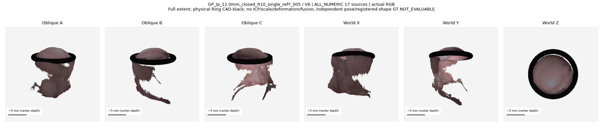
V6__GP_Ip_12.0mm_closed_R10_single_refY_005__ALL_NUMERIC__SOURCE.png 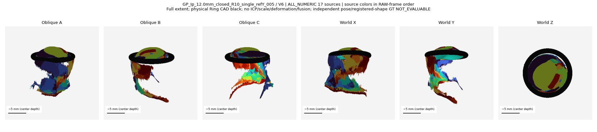
V6__GP_Ip_12.0mm_closed_R10_single_refY_005__FORMAL__RGB.png V6__GP_Ip_12.0mm_closed_R10_single_refY_005__FORMAL__SOURCE.png V6__GP_Ip_12.0mm_closed_R10_single_refY_005__EVERY_SOURCE_ATLAS.png V6__GP_Ip_12.0mm_closed_R10_single_refY_005__REPRESENTATIVES.png V6__GP_Ip_12.0mm_closed_R10_single_refY_005__CAMERAS.png V6__GP_Ip_12.0mm_closed_R10_single_refY_005__ALIAS_ORIGINALS.png near_images / /home/liu/ring_first_3d_workspace/runs/m2f10_v6_multiview/M2F10-FORMAL-20261125-02/attempt0/v6/GP_Ip_12.0mm_closed_R10_single_refY_005 颜色顺序（turbo从起点到终点）：V6_GP_Ip_12.0mm_closed_R10_single_refY_005_005_ref00062_8d5dfa48, V6_GP_Ip_12.0mm_closed_R10_single_refY_005_005_supported_ref00062_8d5dfa48, V6_GP_Ip_12.0mm_closed_R10_single_refY_005_005_supported_ref00125_8d5dfa48, V6_GP_Ip_12.0mm_closed_R10_single_refY_005_005_supported_ref00188_8d5dfa48, V6_GP_Ip_12.0mm_closed_R10_single_refY_005_005_supported_ref00230_8d5dfa48, V6_GP_Ip_12.0mm_closed_R10_single_refY_005_005_supported_ref00251_8d5dfa48, V6_GP_Ip_12.0mm_closed_R10_single_refY_005_005_supported_ref00314_8d5dfa48, V6_GP_Ip_12.0mm_closed_R10_single_refY_005_005_supported_ref00377_8d5dfa48, V6_GP_Ip_12.0mm_closed_R10_single_refY_005_005_supported_ref00398_8d5dfa48, V6_GP_Ip_12.0mm_closed_R10_single_refY_005_005_supported_ref00440_8d5dfa48, V6_GP_Ip_12.0mm_closed_R10_single_refY_005_005_ref00503_8d5dfa48, V6_GP_Ip_12.0mm_closed_R10_single_refY_005_005_supported_ref00503_8d5dfa48, V6_GP_Ip_12.0mm_closed_R10_single_refY_005_005_supported_ref00566_8d5dfa48, V6_GP_Ip_12.0mm_closed_R10_single_refY_005_005_supported_ref00629_8d5dfa48, V6_GP_Ip_12.0mm_closed_R10_single_refY_005_005_supported_ref00692_8d5dfa48, V6_GP_Ip_12.0mm_closed_R10_single_refY_005_005_supported_ref00755_8d5dfa48, V6_GP_Ip_12.0mm_closed_R10_single_refY_005_005_supported_ref00818_8d5dfa48
ALL与FORMAL配色分别按RAW帧、source_id排序后均匀采样turbo；两个子集不共享色号。下表含全部来源，自身指标不以canonical代填。input/原文件路径及哈希见CSV。
source_id / canonical 真实Target → 3Support 原成员 / 自身准入 / 动作 Ring MAE / P95 / max mm；>5mm% CAD共同覆盖 / 数值深度率 条件A→B覆盖 / RGB MAE V6_GP_Ip_12.0mm_closed_R10_single_refY_005_005_ref00062_8d5dfa4862 → [440, 314, 377] False / T=False, S=[True, False, False] / EXISTING 0.928 / 2.243 / 17.566; 4.36% 0.908 / 1.000 0.913 / 31.074 V6_GP_Ip_12.0mm_closed_R10_single_refY_005_005_supported_ref00062_8d5dfa4862 → [440, 398, 566] True / T=False, S=[True, True, True] / EXISTING 0.931 / 2.760 / 18.197; 4.45% 0.908 / 1.000 0.915 / 29.393 V6_GP_Ip_12.0mm_closed_R10_single_refY_005_005_ref00062_9404e8da62 → [440, 314, 377] False / T=False, S=[True, False, False] / EXISTING 0.928 / 2.243 / 17.566; 4.36% 0.908 / 1.000 0.913 / 31.074 V6_GP_Ip_12.0mm_closed_R10_single_refY_005_005_supported_ref00062_9404e8da62 → [440, 398, 566] False / T=False, S=[True, True, True] / EXISTING 0.931 / 2.760 / 18.197; 4.45% 0.908 / 1.000 0.915 / 29.393 V6_M2F12_GP_Ip_12.0mm_closed_R10_single_refY_00562 → [440, 398, 566] False / T=False, S=[True, True, True] / EXISTING 0.931 / 2.760 / 18.197; 4.45% 0.908 / 1.000 0.916 / 29.289 V6_GP_Ip_12.0mm_closed_R10_single_refY_005_005_supported_ref00125_8d5dfa48125 → [440, 398, 566] True / T=False, S=[True, True, True] / EXISTING 0.986 / 7.882 / 17.850; 5.65% 0.910 / 1.000 0.932 / 22.322 V6_GP_Ip_12.0mm_closed_R10_single_refY_005_005_supported_ref00125_9404e8da125 → [440, 398, 566] False / T=False, S=[True, True, True] / EXISTING 0.986 / 7.882 / 17.850; 5.65% 0.910 / 1.000 0.932 / 22.322 V6_GP_Ip_12.0mm_closed_R10_single_refY_005_005_supported_ref00188_8d5dfa48188 → [566, 440, 629] True / T=False, S=[True, True, True] / EXISTING 1.223 / 7.961 / 16.869; 6.58% 0.906 / 1.000 0.885 / 20.551 V6_GP_Ip_12.0mm_closed_R10_single_refY_005_005_supported_ref00188_9404e8da188 → [566, 440, 629] False / T=False, S=[True, True, True] / EXISTING 1.223 / 7.961 / 16.869; 6.58% 0.906 / 1.000 0.885 / 20.551 V6_GP_Ip_12.0mm_closed_R10_single_refY_005_005_supported_ref00230_8d5dfa48230 → [566, 629, 440] True / T=False, S=[True, True, True] / EXISTING 1.031 / 5.283 / 17.274; 5.09% 0.909 / 1.000 0.897 / 17.829 V6_GP_Ip_12.0mm_closed_R10_single_refY_005_005_supported_ref00230_9404e8da230 → [566, 629, 440] False / T=False, S=[True, True, True] / EXISTING 1.031 / 5.283 / 17.274; 5.09% 0.909 / 1.000 0.897 / 17.829 V6_GP_Ip_12.0mm_closed_R10_single_refY_005_005_supported_ref00251_8d5dfa48251 → [566, 629, 440] True / T=False, S=[True, True, True] / EXISTING 0.993 / 4.596 / 17.640; 4.86% 0.905 / 1.000 0.890 / 15.208 V6_GP_Ip_12.0mm_closed_R10_single_refY_005_005_supported_ref00251_9404e8da251 → [566, 629, 440] False / T=False, S=[True, True, True] / EXISTING 0.993 / 4.596 / 17.640; 4.86% 0.905 / 1.000 0.890 / 15.208 V6_GP_Ip_12.0mm_closed_R10_single_refY_005_005_supported_ref00314_8d5dfa48314 → [629, 566, 440] True / T=False, S=[True, True, True] / EXISTING 1.222 / 7.432 / 17.713; 6.03% 0.909 / 1.000 0.896 / 17.858 V6_GP_Ip_12.0mm_closed_R10_single_refY_005_005_supported_ref00314_9404e8da314 → [629, 566, 440] False / T=False, S=[True, True, True] / EXISTING 1.222 / 7.432 / 17.713; 6.03% 0.909 / 1.000 0.896 / 17.858 V6_GP_Ip_12.0mm_closed_R10_single_refY_005_005_supported_ref00377_8d5dfa48377 → [629, 566, 440] True / T=False, S=[True, True, True] / EXISTING 1.046 / 4.691 / 17.704; 4.89% 0.903 / 1.000 0.880 / 15.806 V6_GP_Ip_12.0mm_closed_R10_single_refY_005_005_supported_ref00377_9404e8da377 → [629, 566, 440] False / T=False, S=[True, True, True] / EXISTING 1.046 / 4.691 / 17.704; 4.89% 0.903 / 1.000 0.880 / 15.806 V6_GP_Ip_12.0mm_closed_R10_single_refY_005_005_supported_ref00398_8d5dfa48398 → [629, 566, 440] True / T=True, S=[True, True, True] / EXISTING 1.312 / 7.634 / 17.287; 6.37% 0.886 / 1.000 0.884 / 14.206 V6_GP_Ip_12.0mm_closed_R10_single_refY_005_005_supported_ref00398_9404e8da398 → [629, 566, 440] False / T=True, S=[True, True, True] / EXISTING 1.312 / 7.634 / 17.287; 6.37% 0.886 / 1.000 0.884 / 14.206 V6_GP_Ip_12.0mm_closed_R10_single_refY_005_005_supported_ref00440_8d5dfa48440 → [629, 566, 398] True / T=True, S=[True, True, True] / EXISTING 1.189 / 6.273 / 17.379; 5.36% 0.892 / 1.000 0.886 / 14.158 V6_GP_Ip_12.0mm_closed_R10_single_refY_005_005_supported_ref00440_9404e8da440 → [629, 566, 398] False / T=True, S=[True, True, True] / EXISTING 1.189 / 6.273 / 17.379; 5.36% 0.892 / 1.000 0.886 / 14.158 V6_GP_Ip_12.0mm_closed_R10_single_refY_005_005_ref00503_8d5dfa48503 → [188, 230, 251] False / T=False, S=[False, False, False] / EXISTING 1.165 / 6.669 / 17.694; 5.31% 0.905 / 1.000 0.920 / 19.359 V6_GP_Ip_12.0mm_closed_R10_single_refY_005_005_supported_ref00503_8d5dfa48503 → [398, 629, 440] True / T=False, S=[True, True, True] / EXISTING 1.111 / 6.151 / 17.731; 5.32% 0.905 / 1.000 0.916 / 7.556 V6_GP_Ip_12.0mm_closed_R10_single_refY_005_005_ref00503_9404e8da503 → [188, 230, 251] False / T=False, S=[False, False, False] / EXISTING 1.165 / 6.669 / 17.694; 5.31% 0.905 / 1.000 0.920 / 19.359 V6_GP_Ip_12.0mm_closed_R10_single_refY_005_005_supported_ref00503_9404e8da503 → [398, 629, 440] False / T=False, S=[True, True, True] / EXISTING 1.111 / 6.151 / 17.731; 5.32% 0.905 / 1.000 0.916 / 7.556 V6_GP_Ip_12.0mm_closed_R10_single_refY_005_005_supported_ref00566_8d5dfa48566 → [398, 440, 629] True / T=True, S=[True, True, True] / EXISTING 1.050 / 4.046 / 17.482; 4.78% 0.894 / 1.000 0.921 / 8.458 V6_GP_Ip_12.0mm_closed_R10_single_refY_005_005_supported_ref00566_9404e8da566 → [398, 440, 629] False / T=True, S=[True, True, True] / EXISTING 1.050 / 4.046 / 17.482; 4.78% 0.894 / 1.000 0.921 / 8.458 V6_GP_Ip_12.0mm_closed_R10_single_refY_005_005_supported_ref00629_8d5dfa48629 → [398, 440, 566] True / T=True, S=[True, True, True] / EXISTING 1.330 / 8.288 / 17.757; 6.01% 0.884 / 1.000 0.900 / 11.753 V6_GP_Ip_12.0mm_closed_R10_single_refY_005_005_supported_ref00629_9404e8da629 → [398, 440, 566] False / T=True, S=[True, True, True] / EXISTING 1.330 / 8.288 / 17.757; 6.01% 0.884 / 1.000 0.900 / 11.753 V6_GP_Ip_12.0mm_closed_R10_single_refY_005_005_supported_ref00692_8d5dfa48692 → [398, 440, 566] True / T=False, S=[True, True, True] / EXISTING 0.910 / 2.828 / 18.470; 4.43% 0.902 / 1.000 0.906 / 25.831 V6_GP_Ip_12.0mm_closed_R10_single_refY_005_005_supported_ref00692_9404e8da692 → [398, 440, 566] False / T=False, S=[True, True, True] / EXISTING 0.910 / 2.828 / 18.470; 4.43% 0.902 / 1.000 0.906 / 25.831 V6_GP_Ip_12.0mm_closed_R10_single_refY_005_005_supported_ref00755_8d5dfa48755 → [398, 440, 566] True / T=False, S=[True, True, True] / EXISTING 0.973 / 2.143 / 16.650; 4.08% 0.904 / 1.000 0.896 / 23.875 V6_GP_Ip_12.0mm_closed_R10_single_refY_005_005_supported_ref00755_9404e8da755 → [398, 440, 566] False / T=False, S=[True, True, True] / EXISTING 0.973 / 2.143 / 16.650; 4.08% 0.904 / 1.000 0.896 / 23.875 V6_GP_Ip_12.0mm_closed_R10_single_refY_005_005_supported_ref00818_8d5dfa48818 → [440, 398, 566] True / T=False, S=[True, True, True] / EXISTING 1.191 / 6.540 / 16.573; 5.37% 0.902 / 1.000 0.886 / 22.619 V6_GP_Ip_12.0mm_closed_R10_single_refY_005_005_supported_ref00818_9404e8da818 → [440, 398, 566] False / T=False, S=[True, True, True] / EXISTING 1.191 / 6.540 / 16.573; 5.37% 0.902 / 1.000 0.886 / 22.619
H004_RAW_BASELINE / GP_Ip_20.0mm_closed_R10_single_refY_004 {"case": "GP_Ip_20.0mm_closed_R10_single_refY_004", "route": "H004_RAW_BASELINE", "legal_targets": 15, "original_legal_support_tuples": "15", "unique_generated_combinations": 15, "origin_records": 15, "existing_or_reused": 1, "new_inference": 14, "new_inference_failed": 0, "renderable_unique": 15, "formal_members": 15, "target_own_qualified": 15, "failed_or_empty_status": ""}
H004_RAW_BASELINE__GP_Ip_20.0mm_closed_R10_single_refY_004__ALL_NUMERIC__RGB.png H004_RAW_BASELINE__GP_Ip_20.0mm_closed_R10_single_refY_004__ALL_NUMERIC__SOURCE.png H004_RAW_BASELINE__GP_Ip_20.0mm_closed_R10_single_refY_004__FORMAL__RGB.png H004_RAW_BASELINE__GP_Ip_20.0mm_closed_R10_single_refY_004__FORMAL__SOURCE.png H004_RAW_BASELINE__GP_Ip_20.0mm_closed_R10_single_refY_004__EVERY_SOURCE_ATLAS.png H004_RAW_BASELINE__GP_Ip_20.0mm_closed_R10_single_refY_004__REPRESENTATIVES.png H004_RAW_BASELINE__GP_Ip_20.0mm_closed_R10_single_refY_004__CAMERAS.png near_images / H004 颜色顺序（turbo从起点到终点）：H004_GP_Ip_20.0mm_closed_R10_single_refY_004_view_000, H004_GP_Ip_20.0mm_closed_R10_single_refY_004_view_001, H004_GP_Ip_20.0mm_closed_R10_single_refY_004_view_002, H004_GP_Ip_20.0mm_closed_R10_single_refY_004_view_003, H004_GP_Ip_20.0mm_closed_R10_single_refY_004_view_004, H004_GP_Ip_20.0mm_closed_R10_single_refY_004_view_005, H004_GP_Ip_20.0mm_closed_R10_single_refY_004_view_006, H004_GP_Ip_20.0mm_closed_R10_single_refY_004_view_007, H004_GP_Ip_20.0mm_closed_R10_single_refY_004_view_008, H004_GP_Ip_20.0mm_closed_R10_single_refY_004_view_010, H004_GP_Ip_20.0mm_closed_R10_single_refY_004_view_011, H004_GP_Ip_20.0mm_closed_R10_single_refY_004_view_012, H004_GP_Ip_20.0mm_closed_R10_single_refY_004_view_013, H004_GP_Ip_20.0mm_closed_R10_single_refY_004_view_014, H004_GP_Ip_20.0mm_closed_R10_single_refY_004_view_015
ALL与FORMAL配色分别按RAW帧、source_id排序后均匀采样turbo；两个子集不共享色号。下表含全部来源，自身指标不以canonical代填。input/原文件路径及哈希见CSV。
source_id / canonical 真实Target → 3Support 原成员 / 自身准入 / 动作 Ring MAE / P95 / max mm；>5mm% CAD共同覆盖 / 数值深度率 条件A→B覆盖 / RGB MAE H004_GP_Ip_20.0mm_closed_R10_single_refY_004_view_00064 → [124, 183, 242] True / T=True, S=[True, True, True] / REUSE 7.933 / 11.024 / 66.268; 67.57% 0.703 / 1.000 0.945 / 6.085 H004_GP_Ip_20.0mm_closed_R10_single_refY_004_view_001124 → [64, 183, 242] True / T=True, S=[True, True, True] / NEW 9.169 / 33.808 / 65.997; 68.42% 0.746 / 1.000 0.928 / 6.139 H004_GP_Ip_20.0mm_closed_R10_single_refY_004_view_002183 → [242, 357, 124] True / T=True, S=[True, True, True] / NEW 8.396 / 12.995 / 65.807; 69.20% 0.809 / 1.000 0.939 / 6.036 H004_GP_Ip_20.0mm_closed_R10_single_refY_004_view_003242 → [357, 183, 822] True / T=True, S=[True, True, True] / NEW 11.445 / 63.913 / 73.228; 64.46% 0.917 / 1.000 0.935 / 4.904 H004_GP_Ip_20.0mm_closed_R10_single_refY_004_view_004300 → [357, 183, 822] True / T=True, S=[True, True, True] / NEW 12.750 / 63.969 / 69.430; 77.78% 0.912 / 1.000 0.931 / 5.534 H004_GP_Ip_20.0mm_closed_R10_single_refY_004_view_005357 → [300, 418, 822] True / T=True, S=[True, True, True] / NEW 10.199 / 47.986 / 67.157; 80.36% 0.854 / 1.000 0.944 / 4.363 H004_GP_Ip_20.0mm_closed_R10_single_refY_004_view_006418 → [474, 531, 357] True / T=True, S=[True, True, True] / NEW 8.041 / 9.210 / 67.480; 77.94% 0.820 / 1.000 0.938 / 3.281 H004_GP_Ip_20.0mm_closed_R10_single_refY_004_view_007474 → [418, 531, 357] True / T=True, S=[True, True, True] / NEW 9.134 / 27.502 / 64.208; 78.46% 0.785 / 1.000 0.927 / 3.356 H004_GP_Ip_20.0mm_closed_R10_single_refY_004_view_008531 → [474, 418, 357] True / T=True, S=[True, True, True] / NEW 7.645 / 9.482 / 66.359; 74.34% 0.716 / 1.000 0.939 / 4.892 H004_GP_Ip_20.0mm_closed_R10_single_refY_004_view_010650 → [765, 357, 242] True / T=True, S=[True, True, True] / NEW 13.316 / 68.912 / 73.669; 71.92% 0.661 / 1.000 0.954 / 7.697 H004_GP_Ip_20.0mm_closed_R10_single_refY_004_view_011707 → [822, 941, 650] True / T=True, S=[True, True, True] / NEW 11.666 / 64.561 / 70.076; 75.69% 0.916 / 1.000 0.944 / 6.039 H004_GP_Ip_20.0mm_closed_R10_single_refY_004_view_012765 → [357, 650, 941] True / T=True, S=[True, True, True] / NEW 12.182 / 59.846 / 65.211; 77.52% 0.865 / 1.000 0.928 / 8.971 H004_GP_Ip_20.0mm_closed_R10_single_refY_004_view_013822 → [707, 357, 650] True / T=True, S=[True, True, True] / NEW 10.399 / 59.044 / 64.819; 73.66% 0.868 / 1.000 0.953 / 6.155 H004_GP_Ip_20.0mm_closed_R10_single_refY_004_view_014881 → [765, 242, 124] True / T=True, S=[True, True, True] / NEW 10.049 / 55.588 / 68.761; 65.70% 0.796 / 1.000 0.941 / 8.508 H004_GP_Ip_20.0mm_closed_R10_single_refY_004_view_015941 → [707, 822, 124] True / T=True, S=[True, True, True] / NEW 10.063 / 54.283 / 69.583; 70.70% 0.762 / 1.000 0.923 / 9.290
V6 / GP_Ip_20.0mm_closed_R10_single_refY_004 {"case": "GP_Ip_20.0mm_closed_R10_single_refY_004", "route": "V6", "legal_targets": 0, "original_legal_support_tuples": "0", "unique_generated_combinations": 4, "origin_records": 4, "existing_or_reused": 4, "new_inference": 0, "new_inference_failed": 0, "renderable_unique": 4, "formal_members": 0, "target_own_qualified": 0, "failed_or_empty_status": ""}
V6__GP_Ip_20.0mm_closed_R10_single_refY_004__ALL_NUMERIC__RGB.png V6__GP_Ip_20.0mm_closed_R10_single_refY_004__ALL_NUMERIC__SOURCE.png V6__GP_Ip_20.0mm_closed_R10_single_refY_004__FORMAL__RGB.png V6__GP_Ip_20.0mm_closed_R10_single_refY_004__FORMAL__SOURCE.png V6__GP_Ip_20.0mm_closed_R10_single_refY_004__EVERY_SOURCE_ATLAS.png V6__GP_Ip_20.0mm_closed_R10_single_refY_004__REPRESENTATIVES.png V6__GP_Ip_20.0mm_closed_R10_single_refY_004__CAMERAS.png gauge_images / /home/liu/ring_first_3d_workspace/runs/m2f10_v6_multiview/M2F10-FORMAL-20261125-02/attempt1/v6/GP_Ip_20.0mm_closed_R10_single_refY_004 颜色顺序（turbo从起点到终点）：V6_GP_Ip_20.0mm_closed_R10_single_refY_004_005_ref00020_a8761ba5, V6_GP_Ip_20.0mm_closed_R10_single_refY_004_005_ref00460_a8761ba5
gauge_images / /home/liu/ring_first_3d_workspace/runs/m2f10_v6_multiview/M2F10-FORMAL-20261125-02/attempt0/v6/GP_Ip_20.0mm_closed_R10_single_refY_004 颜色顺序（turbo从起点到终点）：V6_GP_Ip_20.0mm_closed_R10_single_refY_004_005_ref00020_cd71ded8, V6_GP_Ip_20.0mm_closed_R10_single_refY_004_005_ref00460_cd71ded8
near_images / /home/liu/ring_first_3d_workspace/runs/m2f10_v6_multiview/M2F10-FORMAL-20261125-02/attempt1/v6/GP_Ip_20.0mm_closed_R10_single_refY_004 颜色顺序（turbo从起点到终点）：V6_GP_Ip_20.0mm_closed_R10_single_refY_004_005_ref00020_a8761ba5, V6_GP_Ip_20.0mm_closed_R10_single_refY_004_005_ref00460_a8761ba5
near_images / /home/liu/ring_first_3d_workspace/runs/m2f10_v6_multiview/M2F10-FORMAL-20261125-02/attempt0/v6/GP_Ip_20.0mm_closed_R10_single_refY_004 颜色顺序（turbo从起点到终点）：V6_GP_Ip_20.0mm_closed_R10_single_refY_004_005_ref00020_cd71ded8, V6_GP_Ip_20.0mm_closed_R10_single_refY_004_005_ref00460_cd71ded8
ALL与FORMAL配色分别按RAW帧、source_id排序后均匀采样turbo；两个子集不共享色号。下表含全部来源，自身指标不以canonical代填。input/原文件路径及哈希见CSV。
source_id / canonical 真实Target → 3Support 原成员 / 自身准入 / 动作 Ring MAE / P95 / max mm；>5mm% CAD共同覆盖 / 数值深度率 条件A→B覆盖 / RGB MAE V6_GP_Ip_20.0mm_closed_R10_single_refY_004_005_ref00020_a8761ba520 → [460, 485, 534] False / T=False, S=[False, False, False] / EXISTING 12.628 / 74.391 / 81.903; 57.50% 0.836 / 1.000 0.617 / 20.866 V6_GP_Ip_20.0mm_closed_R10_single_refY_004_005_ref00020_cd71ded820 → [460, 534, 387] False / T=False, S=[False, False, False] / EXISTING 11.364 / 64.829 / 70.872; 66.46% 0.825 / 1.000 0.632 / 18.787 V6_GP_Ip_20.0mm_closed_R10_single_refY_004_005_ref00460_a8761ba5460 → [20, 44, 93] False / T=False, S=[False, False, False] / EXISTING 9.419 / 54.294 / 67.385; 66.10% 0.943 / 1.000 0.749 / 11.208 V6_GP_Ip_20.0mm_closed_R10_single_refY_004_005_ref00460_cd71ded8460 → [20, 93, 166] False / T=False, S=[False, False, False] / EXISTING 10.477 / 69.541 / 90.078; 61.59% 0.943 / 1.000 0.719 / 11.125
H004_RAW_BASELINE / GP_Ip_20.0mm_closed_R10_single_refY_005 {"case": "GP_Ip_20.0mm_closed_R10_single_refY_005", "route": "H004_RAW_BASELINE", "legal_targets": 15, "original_legal_support_tuples": "15", "unique_generated_combinations": 15, "origin_records": 15, "existing_or_reused": 1, "new_inference": 14, "new_inference_failed": 0, "renderable_unique": 15, "formal_members": 15, "target_own_qualified": 15, "failed_or_empty_status": ""}
H004_RAW_BASELINE__GP_Ip_20.0mm_closed_R10_single_refY_005__ALL_NUMERIC__RGB.png H004_RAW_BASELINE__GP_Ip_20.0mm_closed_R10_single_refY_005__ALL_NUMERIC__SOURCE.png H004_RAW_BASELINE__GP_Ip_20.0mm_closed_R10_single_refY_005__FORMAL__RGB.png H004_RAW_BASELINE__GP_Ip_20.0mm_closed_R10_single_refY_005__FORMAL__SOURCE.png H004_RAW_BASELINE__GP_Ip_20.0mm_closed_R10_single_refY_005__EVERY_SOURCE_ATLAS.png H004_RAW_BASELINE__GP_Ip_20.0mm_closed_R10_single_refY_005__REPRESENTATIVES.png H004_RAW_BASELINE__GP_Ip_20.0mm_closed_R10_single_refY_005__CAMERAS.png near_images / H004 颜色顺序（turbo从起点到终点）：H004_GP_Ip_20.0mm_closed_R10_single_refY_005_view_000, H004_GP_Ip_20.0mm_closed_R10_single_refY_005_view_001, H004_GP_Ip_20.0mm_closed_R10_single_refY_005_view_002, H004_GP_Ip_20.0mm_closed_R10_single_refY_005_view_003, H004_GP_Ip_20.0mm_closed_R10_single_refY_005_view_004, H004_GP_Ip_20.0mm_closed_R10_single_refY_005_view_005, H004_GP_Ip_20.0mm_closed_R10_single_refY_005_view_006, H004_GP_Ip_20.0mm_closed_R10_single_refY_005_view_007, H004_GP_Ip_20.0mm_closed_R10_single_refY_005_view_008, H004_GP_Ip_20.0mm_closed_R10_single_refY_005_view_009, H004_GP_Ip_20.0mm_closed_R10_single_refY_005_view_010, H004_GP_Ip_20.0mm_closed_R10_single_refY_005_view_011, H004_GP_Ip_20.0mm_closed_R10_single_refY_005_view_012, H004_GP_Ip_20.0mm_closed_R10_single_refY_005_view_013, H004_GP_Ip_20.0mm_closed_R10_single_refY_005_view_014
ALL与FORMAL配色分别按RAW帧、source_id排序后均匀采样turbo；两个子集不共享色号。下表含全部来源，自身指标不以canonical代填。input/原文件路径及哈希见CSV。
source_id / canonical 真实Target → 3Support 原成员 / 自身准入 / 动作 Ring MAE / P95 / max mm；>5mm% CAD共同覆盖 / 数值深度率 条件A→B覆盖 / RGB MAE H004_GP_Ip_20.0mm_closed_R10_single_refY_005_view_00046 → [87, 127, 167] True / T=True, S=[True, True, True] / REUSE 10.970 / 74.196 / 82.364; 56.26% 0.814 / 1.000 0.915 / 7.225 H004_GP_Ip_20.0mm_closed_R10_single_refY_005_view_00187 → [127, 46, 167] True / T=True, S=[True, True, True] / NEW 7.312 / 15.366 / 85.104; 48.32% 0.667 / 1.000 0.927 / 5.131 H004_GP_Ip_20.0mm_closed_R10_single_refY_005_view_002127 → [87, 167, 210] True / T=True, S=[True, True, True] / NEW 7.955 / 49.864 / 84.395; 38.80% 0.554 / 1.000 0.943 / 5.187 H004_GP_Ip_20.0mm_closed_R10_single_refY_005_view_003167 → [210, 127, 372] True / T=True, S=[True, True, True] / NEW 9.237 / 68.202 / 88.329; 42.95% 0.545 / 1.000 0.948 / 4.005 H004_GP_Ip_20.0mm_closed_R10_single_refY_005_view_004210 → [167, 372, 127] True / T=True, S=[True, True, True] / NEW 7.440 / 33.290 / 80.240; 32.72% 0.575 / 1.000 0.934 / 4.103 H004_GP_Ip_20.0mm_closed_R10_single_refY_005_view_005250 → [167, 372, 414] True / T=True, S=[True, True, True] / NEW 8.675 / 44.077 / 86.585; 54.00% 0.558 / 1.000 0.918 / 9.553 H004_GP_Ip_20.0mm_closed_R10_single_refY_005_view_006291 → [372, 167, 127] True / T=True, S=[True, True, True] / NEW 9.122 / 64.824 / 85.616; 39.39% 0.537 / 1.000 0.914 / 12.006 H004_GP_Ip_20.0mm_closed_R10_single_refY_005_view_007332 → [167, 372, 127] True / T=True, S=[True, True, True] / NEW 9.204 / 64.312 / 85.870; 45.05% 0.502 / 1.000 0.928 / 8.551 H004_GP_Ip_20.0mm_closed_R10_single_refY_005_view_008372 → [291, 167, 414] True / T=True, S=[True, True, True] / NEW 10.421 / 69.034 / 77.301; 61.46% 0.659 / 1.000 0.918 / 9.889 H004_GP_Ip_20.0mm_closed_R10_single_refY_005_view_009414 → [455, 291, 372] True / T=True, S=[True, True, True] / NEW 6.708 / 8.508 / 76.886; 65.21% 0.742 / 1.000 0.930 / 7.036 H004_GP_Ip_20.0mm_closed_R10_single_refY_005_view_010455 → [414, 498, 210] True / T=True, S=[True, True, True] / NEW 7.639 / 9.584 / 77.333; 64.93% 0.806 / 1.000 0.913 / 7.038 H004_GP_Ip_20.0mm_closed_R10_single_refY_005_view_011498 → [539, 455, 622] True / T=True, S=[True, True, True] / NEW 4.965 / 9.251 / 10.303; 51.43% 0.596 / 1.000 0.890 / 8.425 H004_GP_Ip_20.0mm_closed_R10_single_refY_005_view_012539 → [498, 622, 46] True / T=True, S=[True, True, True] / NEW 4.463 / 8.121 / 11.391; 44.15% 0.470 / 1.000 0.905 / 9.059 H004_GP_Ip_20.0mm_closed_R10_single_refY_005_view_013582 → [622, 498, 46] True / T=True, S=[True, True, True] / NEW 5.070 / 9.168 / 26.328; 51.55% 0.492 / 1.000 0.880 / 5.678 H004_GP_Ip_20.0mm_closed_R10_single_refY_005_view_014622 → [582, 498, 46] True / T=True, S=[True, True, True] / NEW 4.350 / 9.036 / 10.197; 40.28% 0.387 / 1.000 0.893 / 6.143
V6 / GP_Ip_20.0mm_closed_R10_single_refY_005 {"case": "GP_Ip_20.0mm_closed_R10_single_refY_005", "route": "V6", "legal_targets": 0, "original_legal_support_tuples": "0", "unique_generated_combinations": 4, "origin_records": 4, "existing_or_reused": 4, "new_inference": 0, "new_inference_failed": 0, "renderable_unique": 4, "formal_members": 0, "target_own_qualified": 0, "failed_or_empty_status": ""}
V6__GP_Ip_20.0mm_closed_R10_single_refY_005__ALL_NUMERIC__RGB.png V6__GP_Ip_20.0mm_closed_R10_single_refY_005__ALL_NUMERIC__SOURCE.png V6__GP_Ip_20.0mm_closed_R10_single_refY_005__FORMAL__RGB.png V6__GP_Ip_20.0mm_closed_R10_single_refY_005__FORMAL__SOURCE.png V6__GP_Ip_20.0mm_closed_R10_single_refY_005__EVERY_SOURCE_ATLAS.png V6__GP_Ip_20.0mm_closed_R10_single_refY_005__REPRESENTATIVES.png V6__GP_Ip_20.0mm_closed_R10_single_refY_005__CAMERAS.png gauge_images / /home/liu/ring_first_3d_workspace/runs/m2f10_v6_multiview/M2F10-FORMAL-20261125-02/attempt1/v6/GP_Ip_20.0mm_closed_R10_single_refY_005 颜色顺序（turbo从起点到终点）：V6_GP_Ip_20.0mm_closed_R10_single_refY_005_005_ref00333_ce57b732, V6_GP_Ip_20.0mm_closed_R10_single_refY_005_005_ref00646_ce57b732
gauge_images / /home/liu/ring_first_3d_workspace/runs/m2f10_v6_multiview/M2F10-FORMAL-20261125-02/attempt0/v6/GP_Ip_20.0mm_closed_R10_single_refY_005 颜色顺序（turbo从起点到终点）：V6_GP_Ip_20.0mm_closed_R10_single_refY_005_005_ref00333_d0e0811f, V6_GP_Ip_20.0mm_closed_R10_single_refY_005_005_ref00609_d0e0811f
near_images / /home/liu/ring_first_3d_workspace/runs/m2f10_v6_multiview/M2F10-FORMAL-20261125-02/attempt1/v6/GP_Ip_20.0mm_closed_R10_single_refY_005 颜色顺序（turbo从起点到终点）：V6_GP_Ip_20.0mm_closed_R10_single_refY_005_005_ref00333_ce57b732, V6_GP_Ip_20.0mm_closed_R10_single_refY_005_005_ref00646_ce57b732
near_images / /home/liu/ring_first_3d_workspace/runs/m2f10_v6_multiview/M2F10-FORMAL-20261125-02/attempt0/v6/GP_Ip_20.0mm_closed_R10_single_refY_005 颜色顺序（turbo从起点到终点）：V6_GP_Ip_20.0mm_closed_R10_single_refY_005_005_ref00333_d0e0811f, V6_GP_Ip_20.0mm_closed_R10_single_refY_005_005_ref00609_d0e0811f
ALL与FORMAL配色分别按RAW帧、source_id排序后均匀采样turbo；两个子集不共享色号。下表含全部来源，自身指标不以canonical代填。input/原文件路径及哈希见CSV。
source_id / canonical 真实Target → 3Support 原成员 / 自身准入 / 动作 Ring MAE / P95 / max mm；>5mm% CAD共同覆盖 / 数值深度率 条件A→B覆盖 / RGB MAE V6_GP_Ip_20.0mm_closed_R10_single_refY_005_005_ref00333_ce57b732333 → [609, 554, 646] False / T=False, S=[False, False, False] / EXISTING 1.874 / 1.548 / 45.620; 4.33% 0.973 / 1.000 0.892 / 28.153 V6_GP_Ip_20.0mm_closed_R10_single_refY_005_005_ref00333_d0e0811f333 → [609, 554, 498] False / T=False, S=[False, False, False] / EXISTING 1.741 / 1.335 / 44.643; 4.31% 0.973 / 1.000 0.896 / 29.634 V6_GP_Ip_20.0mm_closed_R10_single_refY_005_005_ref00609_d0e0811f609 → [333, 277, 222] False / T=False, S=[False, False, False] / EXISTING 1.343 / 1.530 / 37.219; 2.93% 0.940 / 1.000 0.848 / 22.195 V6_GP_Ip_20.0mm_closed_R10_single_refY_005_005_ref00646_ce57b732646 → [388, 443, 222] False / T=False, S=[False, False, False] / EXISTING 1.420 / 1.616 / 35.233; 4.01% 0.946 / 1.000 0.805 / 28.188
H004_RAW_BASELINE / GP_Ip_8.8mm_closed_R5_single_refY_004 {"case": "GP_Ip_8.8mm_closed_R5_single_refY_004", "route": "H004_RAW_BASELINE", "legal_targets": 10, "original_legal_support_tuples": "10", "unique_generated_combinations": 10, "origin_records": 10, "existing_or_reused": 1, "new_inference": 9, "new_inference_failed": 0, "renderable_unique": 10, "formal_members": 10, "target_own_qualified": 10, "failed_or_empty_status": ""}
H004_RAW_BASELINE__GP_Ip_8.8mm_closed_R5_single_refY_004__ALL_NUMERIC__RGB.png H004_RAW_BASELINE__GP_Ip_8.8mm_closed_R5_single_refY_004__ALL_NUMERIC__SOURCE.png H004_RAW_BASELINE__GP_Ip_8.8mm_closed_R5_single_refY_004__FORMAL__RGB.png H004_RAW_BASELINE__GP_Ip_8.8mm_closed_R5_single_refY_004__FORMAL__SOURCE.png H004_RAW_BASELINE__GP_Ip_8.8mm_closed_R5_single_refY_004__EVERY_SOURCE_ATLAS.png H004_RAW_BASELINE__GP_Ip_8.8mm_closed_R5_single_refY_004__REPRESENTATIVES.png H004_RAW_BASELINE__GP_Ip_8.8mm_closed_R5_single_refY_004__CAMERAS.png near_images / H004 颜色顺序（turbo从起点到终点）：H004_GP_Ip_8.8mm_closed_R5_single_refY_004_view_001, H004_GP_Ip_8.8mm_closed_R5_single_refY_004_view_005, H004_GP_Ip_8.8mm_closed_R5_single_refY_004_view_006, H004_GP_Ip_8.8mm_closed_R5_single_refY_004_view_007, H004_GP_Ip_8.8mm_closed_R5_single_refY_004_view_008, H004_GP_Ip_8.8mm_closed_R5_single_refY_004_view_010, H004_GP_Ip_8.8mm_closed_R5_single_refY_004_view_011, H004_GP_Ip_8.8mm_closed_R5_single_refY_004_view_013, H004_GP_Ip_8.8mm_closed_R5_single_refY_004_view_014, H004_GP_Ip_8.8mm_closed_R5_single_refY_004_view_015
ALL与FORMAL配色分别按RAW帧、source_id排序后均匀采样turbo；两个子集不共享色号。下表含全部来源，自身指标不以canonical代填。input/原文件路径及哈希见CSV。
source_id / canonical 真实Target → 3Support 原成员 / 自身准入 / 动作 Ring MAE / P95 / max mm；>5mm% CAD共同覆盖 / 数值深度率 条件A→B覆盖 / RGB MAE H004_GP_Ip_8.8mm_closed_R5_single_refY_004_view_001112 → [328, 490, 380] True / T=True, S=[True, True, True] / REUSE 1.312 / 1.756 / 14.242; 2.55% 0.770 / 1.000 0.809 / 16.221 H004_GP_Ip_8.8mm_closed_R5_single_refY_004_view_005328 → [380, 435, 490] True / T=True, S=[True, True, True] / NEW 1.323 / 2.423 / 15.008; 4.50% 0.765 / 1.000 0.824 / 13.504 H004_GP_Ip_8.8mm_closed_R5_single_refY_004_view_006380 → [435, 328, 490] True / T=True, S=[True, True, True] / NEW 1.232 / 2.081 / 15.400; 3.14% 0.762 / 1.000 0.844 / 5.047 H004_GP_Ip_8.8mm_closed_R5_single_refY_004_view_007435 → [380, 490, 328] True / T=True, S=[True, True, True] / NEW 1.212 / 2.091 / 14.373; 2.16% 0.819 / 1.000 0.822 / 5.093 H004_GP_Ip_8.8mm_closed_R5_single_refY_004_view_008490 → [435, 380, 328] True / T=True, S=[True, True, True] / NEW 1.557 / 6.349 / 17.399; 5.46% 0.861 / 1.000 0.831 / 8.123 H004_GP_Ip_8.8mm_closed_R5_single_refY_004_view_010600 → [655, 490, 112] True / T=True, S=[True, True, True] / NEW 1.876 / 9.891 / 23.327; 5.88% 0.966 / 1.000 0.813 / 10.351 H004_GP_Ip_8.8mm_closed_R5_single_refY_004_view_011655 → [600, 818, 871] True / T=True, S=[True, True, True] / NEW 1.873 / 8.292 / 19.927; 5.59% 0.887 / 1.000 0.881 / 10.828 H004_GP_Ip_8.8mm_closed_R5_single_refY_004_view_013762 → [818, 871, 655] True / T=True, S=[True, True, True] / NEW 1.677 / 3.079 / 13.832; 0.25% 0.985 / 1.000 0.856 / 4.543 H004_GP_Ip_8.8mm_closed_R5_single_refY_004_view_014818 → [762, 871, 655] True / T=True, S=[True, True, True] / NEW 1.624 / 2.865 / 10.019; 0.43% 0.919 / 1.000 0.895 / 4.579 H004_GP_Ip_8.8mm_closed_R5_single_refY_004_view_015871 → [818, 762, 655] True / T=True, S=[True, True, True] / NEW 1.255 / 2.330 / 15.496; 1.68% 0.844 / 1.000 0.835 / 19.755
V6 / GP_Ip_8.8mm_closed_R5_single_refY_004 {"case": "GP_Ip_8.8mm_closed_R5_single_refY_004", "route": "V6", "legal_targets": 12, "original_legal_support_tuples": "12", "unique_generated_combinations": 14, "origin_records": 15, "existing_or_reused": 14, "new_inference": 0, "new_inference_failed": 0, "renderable_unique": 14, "formal_members": 12, "target_own_qualified": 0, "failed_or_empty_status": ""}
V6__GP_Ip_8.8mm_closed_R5_single_refY_004__ALL_NUMERIC__RGB.png V6__GP_Ip_8.8mm_closed_R5_single_refY_004__ALL_NUMERIC__SOURCE.png V6__GP_Ip_8.8mm_closed_R5_single_refY_004__FORMAL__RGB.png V6__GP_Ip_8.8mm_closed_R5_single_refY_004__FORMAL__SOURCE.png V6__GP_Ip_8.8mm_closed_R5_single_refY_004__EVERY_SOURCE_ATLAS.png V6__GP_Ip_8.8mm_closed_R5_single_refY_004__REPRESENTATIVES.png V6__GP_Ip_8.8mm_closed_R5_single_refY_004__CAMERAS.png V6__GP_Ip_8.8mm_closed_R5_single_refY_004__ALIAS_ORIGINALS.png near_images / /home/liu/ring_first_3d_workspace/runs/m2f10_v6_multiview/M2F10-FORMAL-20261125-02/attempt0/v6/GP_Ip_8.8mm_closed_R5_single_refY_004 颜色顺序（turbo从起点到终点）：V6_GP_Ip_8.8mm_closed_R5_single_refY_004_005_supported_ref00269_5a5f125c, V6_GP_Ip_8.8mm_closed_R5_single_refY_004_005_supported_ref00337_5a5f125c, V6_GP_Ip_8.8mm_closed_R5_single_refY_004_005_supported_ref00405_5a5f125c, V6_GP_Ip_8.8mm_closed_R5_single_refY_004_005_supported_ref00473_5a5f125c, V6_GP_Ip_8.8mm_closed_R5_single_refY_004_005_ref00541_5a5f125c, V6_GP_Ip_8.8mm_closed_R5_single_refY_004_005_supported_ref00541_5a5f125c, V6_GP_Ip_8.8mm_closed_R5_single_refY_004_005_supported_ref00609_5a5f125c, V6_GP_Ip_8.8mm_closed_R5_single_refY_004_005_supported_ref00654_5a5f125c, V6_GP_Ip_8.8mm_closed_R5_single_refY_004_005_supported_ref00700_5a5f125c, V6_GP_Ip_8.8mm_closed_R5_single_refY_004_005_supported_ref00722_5a5f125c, V6_GP_Ip_8.8mm_closed_R5_single_refY_004_005_supported_ref00745_5a5f125c, V6_GP_Ip_8.8mm_closed_R5_single_refY_004_005_ref00790_5a5f125c, V6_GP_Ip_8.8mm_closed_R5_single_refY_004_005_supported_ref00790_5a5f125c, V6_GP_Ip_8.8mm_closed_R5_single_refY_004_005_supported_ref00858_5a5f125c
ALL与FORMAL配色分别按RAW帧、source_id排序后均匀采样turbo；两个子集不共享色号。下表含全部来源，自身指标不以canonical代填。input/原文件路径及哈希见CSV。
source_id / canonical 真实Target → 3Support 原成员 / 自身准入 / 动作 Ring MAE / P95 / max mm；>5mm% CAD共同覆盖 / 数值深度率 条件A→B覆盖 / RGB MAE V6_GP_Ip_8.8mm_closed_R5_single_refY_004_005_supported_ref00269_5a5f125c269 → [65, 133, 201] True / T=False, S=[True, True, True] / EXISTING 0.628 / 0.863 / 15.920; 1.78% 0.962 / 1.000 0.913 / 10.229 V6_M2F12_GP_Ip_8.8mm_closed_R5_single_refY_004269 → [65, 133, 201] False / T=False, S=[True, True, True] / EXISTING 0.628 / 0.863 / 15.920; 1.78% 0.962 / 1.000 0.911 / 10.321 V6_GP_Ip_8.8mm_closed_R5_single_refY_004_005_supported_ref00337_5a5f125c337 → [65, 133, 201] True / T=False, S=[True, True, True] / EXISTING 0.925 / 0.958 / 15.311; 2.75% 0.953 / 1.000 0.896 / 18.379 V6_GP_Ip_8.8mm_closed_R5_single_refY_004_005_supported_ref00405_5a5f125c405 → [65, 133, 201] True / T=False, S=[True, True, True] / EXISTING 0.928 / 1.380 / 15.920; 3.19% 0.953 / 1.000 0.886 / 32.514 V6_GP_Ip_8.8mm_closed_R5_single_refY_004_005_supported_ref00473_5a5f125c473 → [65, 133, 201] True / T=False, S=[True, True, True] / EXISTING 0.738 / 1.178 / 17.023; 2.48% 0.953 / 1.000 0.896 / 31.522 V6_GP_Ip_8.8mm_closed_R5_single_refY_004_005_ref00541_5a5f125c541 → [405, 337, 201] False / T=False, S=[False, False, True] / EXISTING 0.932 / 1.547 / 20.520; 3.62% 0.954 / 1.000 0.861 / 21.200 V6_GP_Ip_8.8mm_closed_R5_single_refY_004_005_supported_ref00541_5a5f125c541 → [201, 133, 65] True / T=False, S=[True, True, True] / EXISTING 1.072 / 1.724 / 20.299; 3.69% 0.954 / 1.000 0.826 / 50.937 V6_GP_Ip_8.8mm_closed_R5_single_refY_004_005_supported_ref00609_5a5f125c609 → [201, 133, 65] True / T=False, S=[True, True, True] / EXISTING 1.018 / 3.629 / 24.051; 4.26% 0.940 / 1.000 0.798 / 61.129 V6_GP_Ip_8.8mm_closed_R5_single_refY_004_005_supported_ref00654_5a5f125c654 → [201, 133, 65] True / T=False, S=[True, True, True] / EXISTING 1.254 / 3.269 / 22.937; 4.56% 0.929 / 1.000 0.799 / 55.937 V6_GP_Ip_8.8mm_closed_R5_single_refY_004_005_supported_ref00700_5a5f125c700 → [201, 133, 65] True / T=False, S=[True, True, True] / EXISTING 0.544 / 1.126 / 19.602; 0.78% 0.952 / 1.000 0.783 / 76.218 V6_GP_Ip_8.8mm_closed_R5_single_refY_004_005_supported_ref00722_5a5f125c722 → [201, 133, 65] True / T=False, S=[True, True, True] / EXISTING 0.657 / 1.329 / 22.475; 1.43% 0.974 / 1.000 0.801 / 75.601 V6_GP_Ip_8.8mm_closed_R5_single_refY_004_005_supported_ref00745_5a5f125c745 → [201, 133, 65] True / T=False, S=[True, True, True] / EXISTING 0.441 / 1.193 / 4.112; 0.00% 0.978 / 1.000 0.805 / 71.004 V6_GP_Ip_8.8mm_closed_R5_single_refY_004_005_ref00790_5a5f125c790 → [609, 654, 541] False / T=False, S=[False, False, False] / EXISTING 0.772 / 2.226 / 18.628; 0.50% 0.968 / 1.000 0.945 / 19.426 V6_GP_Ip_8.8mm_closed_R5_single_refY_004_005_supported_ref00790_5a5f125c790 → [201, 65, 133] True / T=False, S=[True, True, True] / EXISTING 0.572 / 1.557 / 17.968; 0.50% 0.968 / 1.000 0.820 / 69.733 V6_GP_Ip_8.8mm_closed_R5_single_refY_004_005_supported_ref00858_5a5f125c858 → [201, 65, 133] True / T=False, S=[True, True, True] / EXISTING 0.699 / 1.475 / 20.416; 0.98% 0.948 / 1.000 0.856 / 47.840
H004_RAW_BASELINE / GP_Ip_8.8mm_closed_R5_single_refY_005 {"case": "GP_Ip_8.8mm_closed_R5_single_refY_005", "route": "H004_RAW_BASELINE", "legal_targets": 6, "original_legal_support_tuples": "6", "unique_generated_combinations": 6, "origin_records": 6, "existing_or_reused": 1, "new_inference": 5, "new_inference_failed": 0, "renderable_unique": 6, "formal_members": 6, "target_own_qualified": 6, "failed_or_empty_status": ""}
H004_RAW_BASELINE__GP_Ip_8.8mm_closed_R5_single_refY_005__ALL_NUMERIC__RGB.png H004_RAW_BASELINE__GP_Ip_8.8mm_closed_R5_single_refY_005__ALL_NUMERIC__SOURCE.png H004_RAW_BASELINE__GP_Ip_8.8mm_closed_R5_single_refY_005__FORMAL__RGB.png H004_RAW_BASELINE__GP_Ip_8.8mm_closed_R5_single_refY_005__FORMAL__SOURCE.png H004_RAW_BASELINE__GP_Ip_8.8mm_closed_R5_single_refY_005__EVERY_SOURCE_ATLAS.png H004_RAW_BASELINE__GP_Ip_8.8mm_closed_R5_single_refY_005__REPRESENTATIVES.png H004_RAW_BASELINE__GP_Ip_8.8mm_closed_R5_single_refY_005__CAMERAS.png near_images / H004 颜色顺序（turbo从起点到终点）：H004_GP_Ip_8.8mm_closed_R5_single_refY_005_view_002, H004_GP_Ip_8.8mm_closed_R5_single_refY_005_view_003, H004_GP_Ip_8.8mm_closed_R5_single_refY_005_view_004, H004_GP_Ip_8.8mm_closed_R5_single_refY_005_view_005, H004_GP_Ip_8.8mm_closed_R5_single_refY_005_view_006, H004_GP_Ip_8.8mm_closed_R5_single_refY_005_view_010
ALL与FORMAL配色分别按RAW帧、source_id排序后均匀采样turbo；两个子集不共享色号。下表含全部来源，自身指标不以canonical代填。input/原文件路径及哈希见CSV。
source_id / canonical 真实Target → 3Support 原成员 / 自身准入 / 动作 Ring MAE / P95 / max mm；>5mm% CAD共同覆盖 / 数值深度率 条件A→B覆盖 / RGB MAE H004_GP_Ip_8.8mm_closed_R5_single_refY_005_view_002156 → [553, 208, 255] True / T=True, S=[True, True, True] / REUSE 4.086 / 6.640 / 12.490; 46.72% 0.954 / 1.000 0.723 / 14.510 H004_GP_Ip_8.8mm_closed_R5_single_refY_005_view_003208 → [255, 156, 304] True / T=True, S=[True, True, True] / NEW 3.836 / 5.278 / 11.973; 7.34% 0.904 / 1.000 0.697 / 14.877 H004_GP_Ip_8.8mm_closed_R5_single_refY_005_view_004255 → [304, 208, 354] True / T=True, S=[True, True, True] / NEW 3.751 / 4.617 / 11.615; 4.26% 0.875 / 1.000 0.774 / 3.287 H004_GP_Ip_8.8mm_closed_R5_single_refY_005_view_005304 → [354, 255, 208] True / T=True, S=[True, True, True] / NEW 3.644 / 4.314 / 11.571; 4.07% 0.874 / 1.000 0.790 / 3.680 H004_GP_Ip_8.8mm_closed_R5_single_refY_005_view_006354 → [304, 255, 208] True / T=True, S=[True, True, True] / NEW 3.573 / 4.916 / 11.412; 4.95% 0.833 / 1.000 0.764 / 3.635 H004_GP_Ip_8.8mm_closed_R5_single_refY_005_view_010553 → [156, 208, 255] True / T=True, S=[True, True, True] / NEW 3.819 / 6.871 / 13.014; 37.85% 0.936 / 1.000 0.683 / 13.835
V6 / GP_Ip_8.8mm_closed_R5_single_refY_005 {"case": "GP_Ip_8.8mm_closed_R5_single_refY_005", "route": "V6", "legal_targets": 13, "original_legal_support_tuples": "31", "unique_generated_combinations": 15, "origin_records": 16, "existing_or_reused": 15, "new_inference": 0, "new_inference_failed": 0, "renderable_unique": 15, "formal_members": 13, "target_own_qualified": 4, "failed_or_empty_status": ""}
V6__GP_Ip_8.8mm_closed_R5_single_refY_005__ALL_NUMERIC__RGB.png V6__GP_Ip_8.8mm_closed_R5_single_refY_005__ALL_NUMERIC__SOURCE.png V6__GP_Ip_8.8mm_closed_R5_single_refY_005__FORMAL__RGB.png V6__GP_Ip_8.8mm_closed_R5_single_refY_005__FORMAL__SOURCE.png V6__GP_Ip_8.8mm_closed_R5_single_refY_005__EVERY_SOURCE_ATLAS.png V6__GP_Ip_8.8mm_closed_R5_single_refY_005__REPRESENTATIVES.png V6__GP_Ip_8.8mm_closed_R5_single_refY_005__CAMERAS.png V6__GP_Ip_8.8mm_closed_R5_single_refY_005__ALIAS_ORIGINALS.png near_images / /home/liu/ring_first_3d_workspace/runs/m2f10_v6_multiview/M2F10-FORMAL-20261125-02/attempt0/v6/GP_Ip_8.8mm_closed_R5_single_refY_005 颜色顺序（turbo从起点到终点）：V6_GP_Ip_8.8mm_closed_R5_single_refY_005_005_supported_ref00061_fb9b56ea, V6_GP_Ip_8.8mm_closed_R5_single_refY_005_005_supported_ref00124_fb9b56ea, V6_GP_Ip_8.8mm_closed_R5_single_refY_005_005_supported_ref00187_fb9b56ea, V6_GP_Ip_8.8mm_closed_R5_single_refY_005_005_supported_ref00250_fb9b56ea, V6_GP_Ip_8.8mm_closed_R5_single_refY_005_005_supported_ref00313_fb9b56ea, V6_GP_Ip_8.8mm_closed_R5_single_refY_005_005_supported_ref00376_fb9b56ea, V6_GP_Ip_8.8mm_closed_R5_single_refY_005_005_supported_ref00439_fb9b56ea, V6_GP_Ip_8.8mm_closed_R5_single_refY_005_005_ref00502_fb9b56ea, V6_GP_Ip_8.8mm_closed_R5_single_refY_005_005_supported_ref00502_fb9b56ea, V6_GP_Ip_8.8mm_closed_R5_single_refY_005_005_supported_ref00565_fb9b56ea, V6_GP_Ip_8.8mm_closed_R5_single_refY_005_005_supported_ref00628_fb9b56ea, V6_GP_Ip_8.8mm_closed_R5_single_refY_005_005_supported_ref00691_fb9b56ea, V6_GP_Ip_8.8mm_closed_R5_single_refY_005_005_supported_ref00754_fb9b56ea, V6_GP_Ip_8.8mm_closed_R5_single_refY_005_005_ref00817_fb9b56ea, V6_GP_Ip_8.8mm_closed_R5_single_refY_005_005_supported_ref00817_fb9b56ea
ALL与FORMAL配色分别按RAW帧、source_id排序后均匀采样turbo；两个子集不共享色号。下表含全部来源，自身指标不以canonical代填。input/原文件路径及哈希见CSV。
source_id / canonical 真实Target → 3Support 原成员 / 自身准入 / 动作 Ring MAE / P95 / max mm；>5mm% CAD共同覆盖 / 数值深度率 条件A→B覆盖 / RGB MAE V6_GP_Ip_8.8mm_closed_R5_single_refY_005_005_supported_ref00061_fb9b56ea61 → [313, 376, 439] True / T=False, S=[True, True, True] / EXISTING 0.746 / 1.180 / 11.563; 2.70% 0.928 / 1.000 0.829 / 19.150 V6_M2F12_GP_Ip_8.8mm_closed_R5_single_refY_00561 → [313, 376, 439] False / T=False, S=[True, True, True] / EXISTING 0.746 / 1.180 / 11.563; 2.70% 0.928 / 1.000 0.829 / 19.162 V6_GP_Ip_8.8mm_closed_R5_single_refY_005_005_supported_ref00124_fb9b56ea124 → [313, 376, 439] True / T=False, S=[True, True, True] / EXISTING 0.603 / 0.896 / 11.749; 2.69% 0.928 / 1.000 0.868 / 31.365 V6_GP_Ip_8.8mm_closed_R5_single_refY_005_005_supported_ref00187_fb9b56ea187 → [565, 376, 439] True / T=False, S=[True, True, True] / EXISTING 0.827 / 4.096 / 11.663; 4.77% 0.911 / 1.000 0.870 / 9.760 V6_GP_Ip_8.8mm_closed_R5_single_refY_005_005_supported_ref00250_fb9b56ea250 → [565, 439, 376] True / T=False, S=[True, True, True] / EXISTING 0.794 / 1.888 / 12.050; 4.05% 0.908 / 1.000 0.867 / 15.655 V6_GP_Ip_8.8mm_closed_R5_single_refY_005_005_supported_ref00313_fb9b56ea313 → [565, 439, 376] True / T=True, S=[True, True, True] / EXISTING 1.080 / 6.290 / 13.038; 5.39% 0.909 / 1.000 0.861 / 18.025 V6_GP_Ip_8.8mm_closed_R5_single_refY_005_005_supported_ref00376_fb9b56ea376 → [565, 439, 313] True / T=True, S=[True, True, True] / EXISTING 0.866 / 2.734 / 12.917; 4.35% 0.898 / 1.000 0.853 / 19.528 V6_GP_Ip_8.8mm_closed_R5_single_refY_005_005_supported_ref00439_fb9b56ea439 → [565, 313, 376] True / T=True, S=[True, True, True] / EXISTING 0.866 / 2.581 / 13.487; 4.39% 0.908 / 1.000 0.870 / 16.882 V6_GP_Ip_8.8mm_closed_R5_single_refY_005_005_ref00502_fb9b56ea502 → [691, 754, 817] False / T=False, S=[False, False, False] / EXISTING 0.945 / 1.919 / 12.599; 4.00% 0.912 / 1.000 0.902 / 13.030 V6_GP_Ip_8.8mm_closed_R5_single_refY_005_005_supported_ref00502_fb9b56ea502 → [376, 313, 439] True / T=False, S=[True, True, True] / EXISTING 0.814 / 1.875 / 12.661; 3.86% 0.912 / 1.000 0.874 / 9.950 V6_GP_Ip_8.8mm_closed_R5_single_refY_005_005_supported_ref00565_fb9b56ea565 → [313, 376, 439] True / T=True, S=[True, True, True] / EXISTING 0.903 / 1.711 / 12.477; 3.86% 0.908 / 1.000 0.842 / 15.015 V6_GP_Ip_8.8mm_closed_R5_single_refY_005_005_supported_ref00628_fb9b56ea628 → [313, 376, 439] True / T=False, S=[True, True, True] / EXISTING 0.839 / 3.037 / 12.304; 4.40% 0.903 / 1.000 0.823 / 18.945 V6_GP_Ip_8.8mm_closed_R5_single_refY_005_005_supported_ref00691_fb9b56ea691 → [313, 376, 439] True / T=False, S=[True, True, True] / EXISTING 0.882 / 1.461 / 12.458; 3.31% 0.926 / 1.000 0.805 / 17.221 V6_GP_Ip_8.8mm_closed_R5_single_refY_005_005_supported_ref00754_fb9b56ea754 → [565, 313, 376] True / T=False, S=[True, True, True] / EXISTING 0.845 / 1.297 / 11.709; 3.37% 0.921 / 1.000 0.861 / 18.597 V6_GP_Ip_8.8mm_closed_R5_single_refY_005_005_ref00817_fb9b56ea817 → [565, 502, 628] False / T=False, S=[True, False, False] / EXISTING 0.969 / 4.701 / 11.997; 4.87% 0.919 / 1.000 0.827 / 23.307 V6_GP_Ip_8.8mm_closed_R5_single_refY_005_005_supported_ref00817_fb9b56ea817 → [565, 376, 313] True / T=False, S=[True, True, True] / EXISTING 0.928 / 4.957 / 11.940; 5.01% 0.919 / 1.000 0.840 / 22.526
H004_RAW_BASELINE / GP_Is_14.0mm_closed_R5_single_refY_004 {"case": "GP_Is_14.0mm_closed_R5_single_refY_004", "route": "H004_RAW_BASELINE", "legal_targets": 0, "original_legal_support_tuples": "", "unique_generated_combinations": 0, "origin_records": 0, "existing_or_reused": 0, "new_inference": 0, "new_inference_failed": 0, "renderable_unique": 0, "formal_members": 0, "target_own_qualified": 0, "failed_or_empty_status": "ValueError('Ring anchoring invalid torus views [5, 6, 7, 8]')"}
H004_RAW_BASELINE__GP_Is_14.0mm_closed_R5_single_refY_004__ALL_NUMERIC__RGB.png H004_RAW_BASELINE__GP_Is_14.0mm_closed_R5_single_refY_004__ALL_NUMERIC__SOURCE.png H004_RAW_BASELINE__GP_Is_14.0mm_closed_R5_single_refY_004__FORMAL__RGB.png H004_RAW_BASELINE__GP_Is_14.0mm_closed_R5_single_refY_004__FORMAL__SOURCE.png ALL与FORMAL配色分别按RAW帧、source_id排序后均匀采样turbo；两个子集不共享色号。下表含全部来源，自身指标不以canonical代填。input/原文件路径及哈希见CSV。
source_id / canonical 真实Target → 3Support 原成员 / 自身准入 / 动作 Ring MAE / P95 / max mm；>5mm% CAD共同覆盖 / 数值深度率 条件A→B覆盖 / RGB MAE
V6 / GP_Is_14.0mm_closed_R5_single_refY_004 {"case": "GP_Is_14.0mm_closed_R5_single_refY_004", "route": "V6", "legal_targets": 9, "original_legal_support_tuples": "9", "unique_generated_combinations": 11, "origin_records": 12, "existing_or_reused": 11, "new_inference": 0, "new_inference_failed": 0, "renderable_unique": 11, "formal_members": 9, "target_own_qualified": 0, "failed_or_empty_status": ""}
V6__GP_Is_14.0mm_closed_R5_single_refY_004__ALL_NUMERIC__RGB.png V6__GP_Is_14.0mm_closed_R5_single_refY_004__ALL_NUMERIC__SOURCE.png V6__GP_Is_14.0mm_closed_R5_single_refY_004__FORMAL__RGB.png V6__GP_Is_14.0mm_closed_R5_single_refY_004__FORMAL__SOURCE.png V6__GP_Is_14.0mm_closed_R5_single_refY_004__EVERY_SOURCE_ATLAS.png V6__GP_Is_14.0mm_closed_R5_single_refY_004__REPRESENTATIVES.png V6__GP_Is_14.0mm_closed_R5_single_refY_004__CAMERAS.png V6__GP_Is_14.0mm_closed_R5_single_refY_004__ALIAS_ORIGINALS.png near_images / /home/liu/ring_first_3d_workspace/runs/m2f10_v6_multiview/M2F10-FORMAL-20261125-02/attempt0/v6/GP_Is_14.0mm_closed_R5_single_refY_004 颜色顺序（turbo从起点到终点）：V6_GP_Is_14.0mm_closed_R5_single_refY_004_005_supported_ref00056_3dd9f532, V6_GP_Is_14.0mm_closed_R5_single_refY_004_005_supported_ref00111_3dd9f532, V6_GP_Is_14.0mm_closed_R5_single_refY_004_005_supported_ref00166_3dd9f532, V6_GP_Is_14.0mm_closed_R5_single_refY_004_005_supported_ref00221_3dd9f532, V6_GP_Is_14.0mm_closed_R5_single_refY_004_005_supported_ref00276_3dd9f532, V6_GP_Is_14.0mm_closed_R5_single_refY_004_005_ref00331_3dd9f532, V6_GP_Is_14.0mm_closed_R5_single_refY_004_005_supported_ref00331_3dd9f532, V6_GP_Is_14.0mm_closed_R5_single_refY_004_005_ref00385_3dd9f532, V6_GP_Is_14.0mm_closed_R5_single_refY_004_005_supported_ref00385_3dd9f532, V6_GP_Is_14.0mm_closed_R5_single_refY_004_005_supported_ref00550_3dd9f532, V6_GP_Is_14.0mm_closed_R5_single_refY_004_005_supported_ref00605_3dd9f532
ALL与FORMAL配色分别按RAW帧、source_id排序后均匀采样turbo；两个子集不共享色号。下表含全部来源，自身指标不以canonical代填。input/原文件路径及哈希见CSV。
source_id / canonical 真实Target → 3Support 原成员 / 自身准入 / 动作 Ring MAE / P95 / max mm；>5mm% CAD共同覆盖 / 数值深度率 条件A→B覆盖 / RGB MAE V6_GP_Is_14.0mm_closed_R5_single_refY_004_005_supported_ref00056_3dd9f53256 → [495, 440, 623] True / T=False, S=[True, True, True] / EXISTING 0.956 / 1.464 / 4.678; 0.00% 0.857 / 1.000 0.947 / 28.547 V6_M2F12_GP_Is_14.0mm_closed_R5_single_refY_00456 → [495, 440, 623] False / T=False, S=[True, True, True] / EXISTING 0.956 / 1.464 / 4.678; 0.00% 0.857 / 1.000 0.949 / 28.646 V6_GP_Is_14.0mm_closed_R5_single_refY_004_005_supported_ref00111_3dd9f532111 → [495, 623, 440] True / T=False, S=[True, True, True] / EXISTING 1.235 / 4.734 / 6.521; 4.69% 0.865 / 1.000 0.953 / 22.048 V6_GP_Is_14.0mm_closed_R5_single_refY_004_005_supported_ref00166_3dd9f532166 → [495, 440, 623] True / T=False, S=[True, True, True] / EXISTING 1.419 / 1.882 / 6.923; 1.64% 0.863 / 1.000 0.956 / 13.443 V6_GP_Is_14.0mm_closed_R5_single_refY_004_005_supported_ref00221_3dd9f532221 → [440, 623, 495] True / T=False, S=[True, True, True] / EXISTING 1.046 / 2.932 / 6.671; 3.80% 0.905 / 1.000 0.923 / 35.594 V6_GP_Is_14.0mm_closed_R5_single_refY_004_005_supported_ref00276_3dd9f532276 → [495, 440, 623] True / T=False, S=[True, True, True] / EXISTING 0.676 / 1.905 / 6.754; 2.25% 0.920 / 1.000 0.924 / 33.548 V6_GP_Is_14.0mm_closed_R5_single_refY_004_005_ref00331_3dd9f532331 → [111, 166, 56] False / T=False, S=[False, False, False] / EXISTING 0.731 / 1.684 / 6.679; 3.48% 0.921 / 1.000 0.916 / 24.704 V6_GP_Is_14.0mm_closed_R5_single_refY_004_005_supported_ref00331_3dd9f532331 → [440, 623, 495] True / T=False, S=[True, True, True] / EXISTING 0.698 / 1.584 / 6.735; 1.45% 0.921 / 1.000 0.906 / 32.858 V6_GP_Is_14.0mm_closed_R5_single_refY_004_005_ref00385_3dd9f532385 → [605, 495, 276] False / T=False, S=[False, True, False] / EXISTING 0.852 / 1.194 / 7.096; 3.06% 0.937 / 1.000 0.932 / 20.550 V6_GP_Is_14.0mm_closed_R5_single_refY_004_005_supported_ref00385_3dd9f532385 → [495, 440, 623] True / T=False, S=[True, True, True] / EXISTING 0.931 / 1.302 / 6.620; 2.98% 0.937 / 1.000 0.956 / 16.936 V6_GP_Is_14.0mm_closed_R5_single_refY_004_005_supported_ref00550_3dd9f532550 → [623, 495, 440] True / T=False, S=[True, True, True] / EXISTING 1.104 / 2.047 / 9.843; 2.83% 0.904 / 1.000 0.953 / 11.959 V6_GP_Is_14.0mm_closed_R5_single_refY_004_005_supported_ref00605_3dd9f532605 → [495, 440, 623] True / T=False, S=[True, True, True] / EXISTING 1.821 / 2.637 / 7.635; 1.62% 0.912 / 1.000 0.965 / 9.801
H004_RAW_BASELINE / GP_Is_14.0mm_closed_R5_single_refY_005 {"case": "GP_Is_14.0mm_closed_R5_single_refY_005", "route": "H004_RAW_BASELINE", "legal_targets": 0, "original_legal_support_tuples": "", "unique_generated_combinations": 0, "origin_records": 0, "existing_or_reused": 0, "new_inference": 0, "new_inference_failed": 0, "renderable_unique": 0, "formal_members": 0, "target_own_qualified": 0, "failed_or_empty_status": "ValueError('nonpositive global Ring scale from observed candidates; no fallback')"}
H004_RAW_BASELINE__GP_Is_14.0mm_closed_R5_single_refY_005__ALL_NUMERIC__RGB.png H004_RAW_BASELINE__GP_Is_14.0mm_closed_R5_single_refY_005__ALL_NUMERIC__SOURCE.png H004_RAW_BASELINE__GP_Is_14.0mm_closed_R5_single_refY_005__FORMAL__RGB.png H004_RAW_BASELINE__GP_Is_14.0mm_closed_R5_single_refY_005__FORMAL__SOURCE.png ALL与FORMAL配色分别按RAW帧、source_id排序后均匀采样turbo；两个子集不共享色号。下表含全部来源，自身指标不以canonical代填。input/原文件路径及哈希见CSV。
source_id / canonical 真实Target → 3Support 原成员 / 自身准入 / 动作 Ring MAE / P95 / max mm；>5mm% CAD共同覆盖 / 数值深度率 条件A→B覆盖 / RGB MAE
V6 / GP_Is_14.0mm_closed_R5_single_refY_005 {"case": "GP_Is_14.0mm_closed_R5_single_refY_005", "route": "V6", "legal_targets": 0, "original_legal_support_tuples": "0", "unique_generated_combinations": 4, "origin_records": 10, "existing_or_reused": 4, "new_inference": 0, "new_inference_failed": 0, "renderable_unique": 4, "formal_members": 0, "target_own_qualified": 0, "failed_or_empty_status": ""}
V6__GP_Is_14.0mm_closed_R5_single_refY_005__ALL_NUMERIC__RGB.png V6__GP_Is_14.0mm_closed_R5_single_refY_005__ALL_NUMERIC__SOURCE.png V6__GP_Is_14.0mm_closed_R5_single_refY_005__FORMAL__RGB.png V6__GP_Is_14.0mm_closed_R5_single_refY_005__FORMAL__SOURCE.png V6__GP_Is_14.0mm_closed_R5_single_refY_005__EVERY_SOURCE_ATLAS.png V6__GP_Is_14.0mm_closed_R5_single_refY_005__REPRESENTATIVES.png V6__GP_Is_14.0mm_closed_R5_single_refY_005__CAMERAS.png V6__GP_Is_14.0mm_closed_R5_single_refY_005__ALIAS_ORIGINALS.png gauge_images / /home/liu/ring_first_3d_workspace/runs/m2f10_v6_multiview/M2F10-SMOKE-IS14-005-20261125-02/attempt0/v6/GP_Is_14.0mm_closed_R5_single_refY_005 颜色顺序（turbo从起点到终点）：V6_GP_Is_14.0mm_closed_R5_single_refY_005_005_ref00075_276bb2ca, V6_GP_Is_14.0mm_closed_R5_single_refY_005_005_ref00297_276bb2ca
gauge_images / /home/liu/ring_first_3d_workspace/runs/m2f10_v6_multiview/M2F10-FORMAL-20261125-02/attempt1/v6/GP_Is_14.0mm_closed_R5_single_refY_005 颜色顺序（turbo从起点到终点）：V6_GP_Is_14.0mm_closed_R5_single_refY_005_005_ref00315_66988587, V6_GP_Is_14.0mm_closed_R5_single_refY_005_005_ref00407_66988587
near_images / /home/liu/ring_first_3d_workspace/runs/m2f10_v6_multiview/M2F10-SMOKE-IS14-005-20261125-02/attempt0/v6/GP_Is_14.0mm_closed_R5_single_refY_005 颜色顺序（turbo从起点到终点）：V6_GP_Is_14.0mm_closed_R5_single_refY_005_005_ref00075_276bb2ca, V6_GP_Is_14.0mm_closed_R5_single_refY_005_005_ref00297_276bb2ca
near_images / /home/liu/ring_first_3d_workspace/runs/m2f10_v6_multiview/M2F10-FORMAL-20261125-02/attempt1/v6/GP_Is_14.0mm_closed_R5_single_refY_005 颜色顺序（turbo从起点到终点）：V6_GP_Is_14.0mm_closed_R5_single_refY_005_005_ref00315_66988587, V6_GP_Is_14.0mm_closed_R5_single_refY_005_005_ref00407_66988587
ALL与FORMAL配色分别按RAW帧、source_id排序后均匀采样turbo；两个子集不共享色号。下表含全部来源，自身指标不以canonical代填。input/原文件路径及哈希见CSV。
source_id / canonical 真实Target → 3Support 原成员 / 自身准入 / 动作 Ring MAE / P95 / max mm；>5mm% CAD共同覆盖 / 数值深度率 条件A→B覆盖 / RGB MAE V6_GP_Is_14.0mm_closed_R5_single_refY_005_005_ref00075_276bb2ca75 → [241, 186, 297] False / T=False, S=[False, False, False] / EXISTING 2.744 / 5.062 / 5.558; 8.06% 0.894 / 1.000 0.883 / 12.951 V6_GP_Is_14.0mm_closed_R5_single_refY_005_005_ref00075_29a7fe1f75 → [241, 186, 297] False / T=False, S=[False, False, False] / EXISTING 2.744 / 5.062 / 5.558; 8.06% 0.894 / 1.000 0.883 / 12.951 V6_GP_Is_14.0mm_closed_R5_single_refY_005_005_ref00075_370697d275 → [241, 186, 297] False / T=False, S=[False, False, False] / EXISTING 2.744 / 5.062 / 5.558; 8.06% 0.894 / 1.000 0.883 / 12.951 V6_GP_Is_14.0mm_closed_R5_single_refY_005_005_ref00297_276bb2ca297 → [555, 463, 407] False / T=False, S=[False, False, False] / EXISTING 5.297 / 8.195 / 8.679; 50.94% 0.934 / 1.000 0.869 / 12.270 V6_GP_Is_14.0mm_closed_R5_single_refY_005_005_ref00297_29a7fe1f297 → [555, 463, 407] False / T=False, S=[False, False, False] / EXISTING 5.297 / 8.195 / 8.679; 50.94% 0.934 / 1.000 0.869 / 12.270 V6_GP_Is_14.0mm_closed_R5_single_refY_005_005_ref00297_370697d2297 → [555, 463, 407] False / T=False, S=[False, False, False] / EXISTING 5.297 / 8.195 / 8.679; 50.94% 0.934 / 1.000 0.869 / 12.270 V6_GP_Is_14.0mm_closed_R5_single_refY_005_005_ref00315_66988587315 → [352, 555, 574] False / T=False, S=[False, False, False] / EXISTING 1.090 / 1.979 / 2.549; 0.00% 0.933 / 1.000 0.424 / 17.110 V6_GP_Is_14.0mm_closed_R5_single_refY_005_005_ref00315_d99bc9cc315 → [352, 555, 574] False / T=False, S=[False, False, False] / EXISTING 1.090 / 1.979 / 2.549; 0.00% 0.933 / 1.000 0.424 / 17.110 V6_GP_Is_14.0mm_closed_R5_single_refY_005_005_ref00407_66988587407 → [463, 352, 518] False / T=False, S=[False, False, False] / EXISTING 0.634 / 1.324 / 1.843; 0.00% 0.712 / 1.000 0.771 / 18.040 V6_GP_Is_14.0mm_closed_R5_single_refY_005_005_ref00407_d99bc9cc407 → [463, 352, 518] False / T=False, S=[False, False, False] / EXISTING 0.634 / 1.324 / 1.843; 0.00% 0.712 / 1.000 0.771 / 18.040